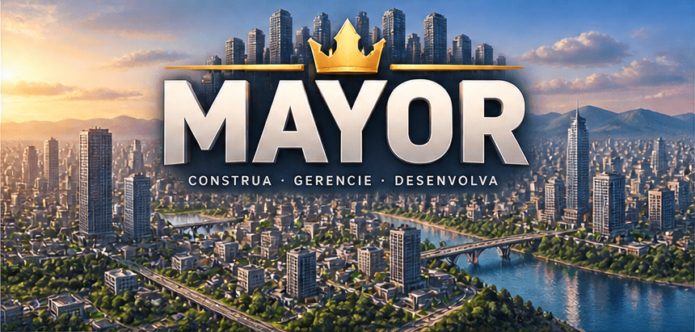
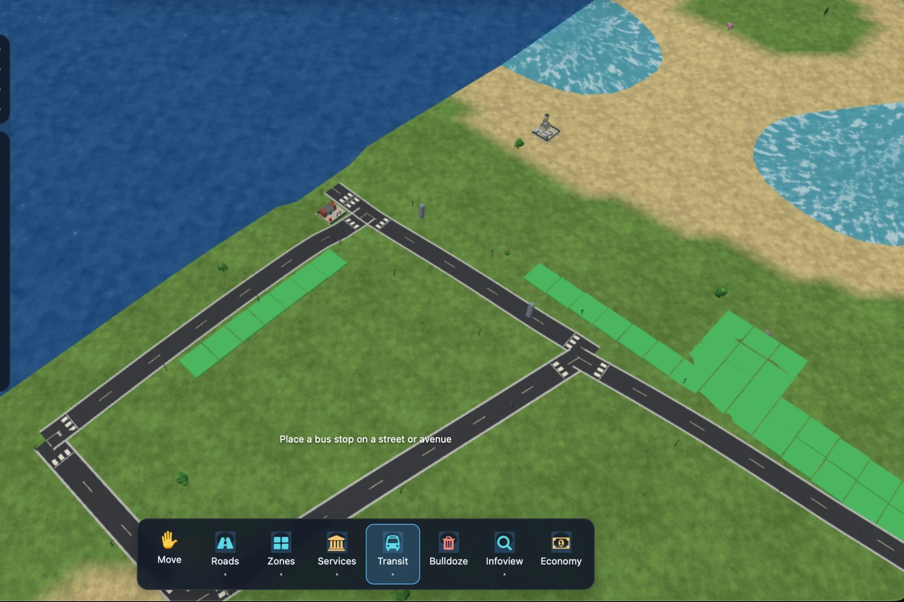
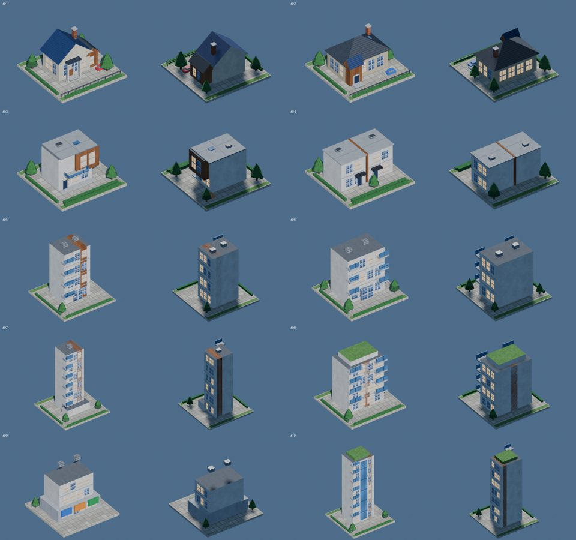
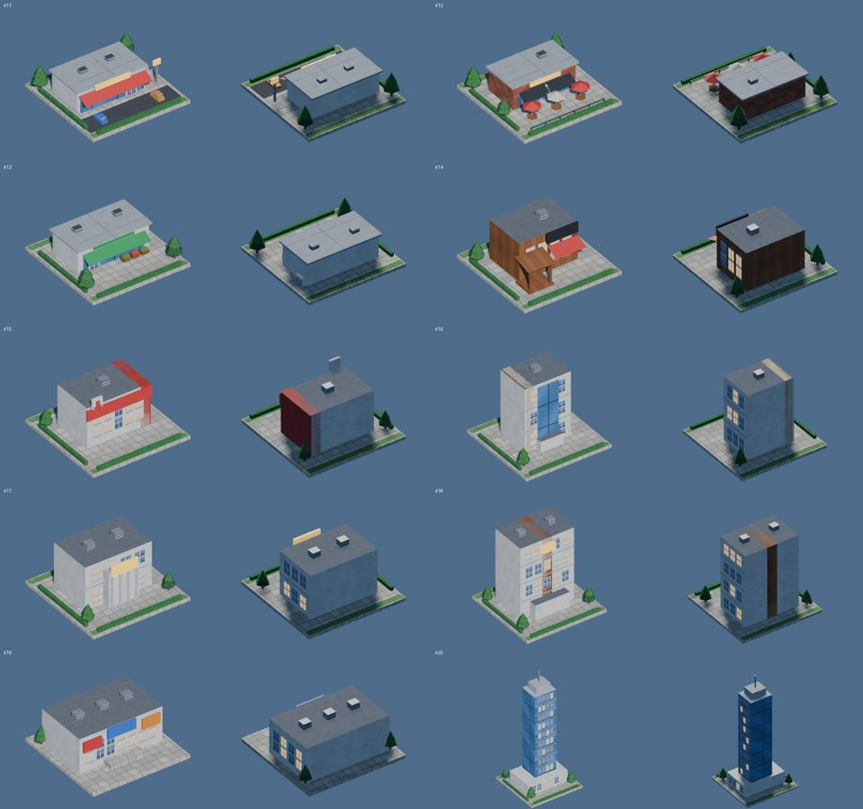
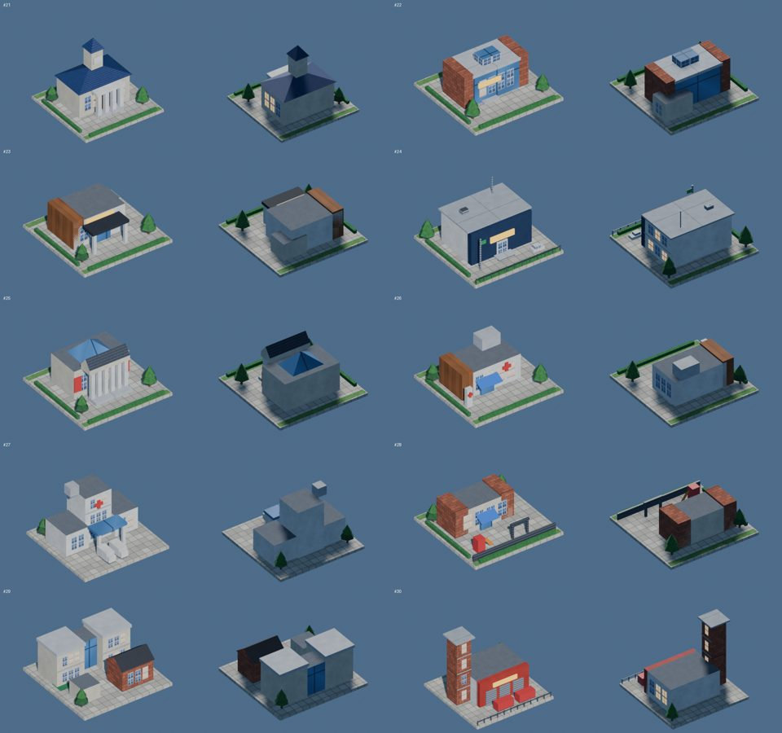
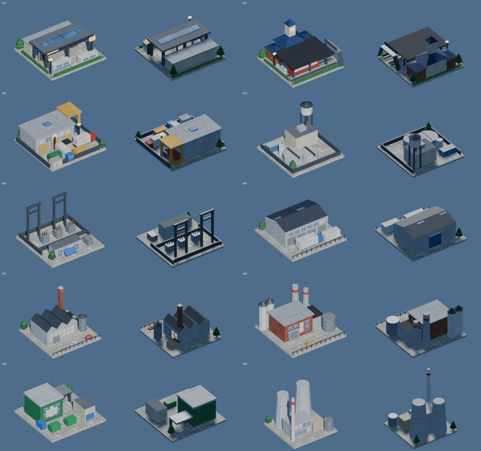
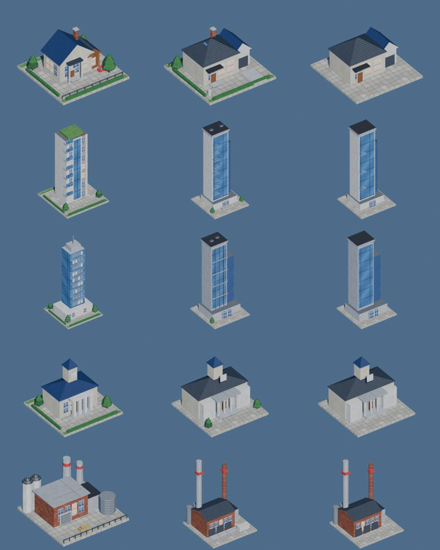

<title>Mayor</title>
<link rel="preconnect" href="https://fonts.googleapis.com">
<link rel="preconnect" href="https://fonts.gstatic.com" crossorigin>
<link rel="stylesheet" href="https://fonts.googleapis.com/css2?family=Archivo:wght@500;800;900&family=IBM+Plex+Sans:wght@400;500;600&family=IBM+Plex+Mono:wght@400;500&display=swap">
<style>
  /* Layout: single column status page. Hero logo card, then a milestone track
     (real sequence, so numbered), a "playable now" shot, run/verify, changelog. */
  :root {
    --bg: #f2f6fb;
    --surface: #ffffff;
    --surface-2: #e8eff8;
    --fg: #0c1a2e;
    --muted: #55677f;
    --line: #d3dfee;
    --accent: #1c6fe6;
    --accent-ink: #ffffff;
    --good: #14804a;
    --warn: #a15c00;
    --font-display: "Archivo", "Helvetica Neue", Arial, sans-serif;
    --font-body: "IBM Plex Sans", system-ui, -apple-system, "Segoe UI", sans-serif;
    --font-mono: "IBM Plex Mono", ui-monospace, "SF Mono", Menlo, monospace;
  }
  @media (prefers-color-scheme: dark) {
    :root:not([data-theme="light"]) {
      --bg: #08121f; --surface: #0f1d30; --surface-2: #14263d; --fg: #e6eef9;
      --muted: #93a6c0; --line: #213652; --accent: #4d9bff; --accent-ink: #04101f;
      --good: #4fd08b; --warn: #f0b24a; color-scheme: dark;
    }
  }
  :root[data-theme="dark"] {
    --bg: #08121f; --surface: #0f1d30; --surface-2: #14263d; --fg: #e6eef9;
    --muted: #93a6c0; --line: #213652; --accent: #4d9bff; --accent-ink: #04101f;
    --good: #4fd08b; --warn: #f0b24a; color-scheme: dark;
  }
  * { box-sizing: border-box; }
  body {
    background: var(--bg); color: var(--fg); font-family: var(--font-body);
    font-size: 15px; line-height: 1.55; padding-inline: 16px; padding-block: 24px 64px;
  }
  .wrap { max-width: 880px; margin-inline: auto; display: flex; flex-direction: column; gap: 40px; }
  h1, h2, h3 { font-family: var(--font-display); line-height: 1.1; margin: 0; text-wrap: balance; }
  h2 { font-size: 22px; font-weight: 800; letter-spacing: -0.01em; }
  h3 { font-size: 16px; font-weight: 800; }
  p { margin: 0; }
  .mono { font-family: var(--font-mono); }
  .label { font: 500 11px/1 var(--font-mono); letter-spacing: .08em; text-transform: uppercase; color: var(--muted); }

  .hero { background: #fff; border-radius: 18px; overflow: hidden; border: 1px solid var(--line); }
  .hero img { display: block; width: 100%; height: auto; }
  .now { display: grid; grid-template-columns: 1fr auto; gap: 8px 24px; align-items: end; }
  .now h1 { font-size: clamp(26px, 5vw, 36px); font-weight: 900; letter-spacing: -0.02em; }
  .now p { color: var(--muted); max-width: 60ch; margin-top: 8px; }
  .stamp { text-align: right; min-width: 0; }
  .stamp b { display: block; font: 500 14px var(--font-mono); margin-top: 6px; }
  @media (max-width: 560px) { .now { grid-template-columns: 1fr; } .stamp { text-align: left; } }

  .progress { display: flex; align-items: center; gap: 12px; }
  .bar { flex: 1; height: 8px; border-radius: 99px; background: var(--surface-2); overflow: hidden; }
  .bar i { display: block; height: 100%; background: var(--accent); border-radius: 99px; }

  .track { list-style: none; margin: 0; padding: 0; display: flex; flex-direction: column; gap: 8px; }
  .ms { display: grid; grid-template-columns: 48px minmax(0, 1fr) auto; gap: 4px 14px; align-items: start;
        background: var(--surface); border: 1px solid var(--line); border-radius: 12px; padding: 12px 14px; }
  .ms .id { font: 500 13px var(--font-mono); color: var(--muted); padding-top: 2px; }
  .ms .name { font-weight: 600; }
  .ms .desc { color: var(--muted); font-size: 14px; grid-column: 2 / 3; }
  .pill { font: 500 11px var(--font-mono); letter-spacing: .04em; padding: 4px 9px; border-radius: 99px;
          background: var(--surface-2); color: var(--muted); white-space: nowrap; }
  .ms.done { border-color: color-mix(in srgb, var(--good) 45%, var(--line)); }
  .ms.done .pill { background: color-mix(in srgb, var(--good) 16%, transparent); color: var(--good); }
  .ms.active { border-color: var(--accent); box-shadow: 0 0 0 3px color-mix(in srgb, var(--accent) 18%, transparent); }
  .ms.active .pill { background: var(--accent); color: var(--accent-ink); }
  .ms.active .id { color: var(--accent); }

  .shot { margin: 0; display: flex; flex-direction: column; gap: 10px; }
  .shot img { width: 100%; height: auto; border-radius: 12px; border: 1px solid var(--line); display: block; }
  .shot figcaption { color: var(--muted); font-size: 13px; }

  .cols { display: grid; grid-template-columns: repeat(auto-fit, minmax(260px, 1fr)); gap: 16px; }
  .box { background: var(--surface); border: 1px solid var(--line); border-radius: 12px; padding: 16px; min-width: 0; display: flex; flex-direction: column; gap: 10px; }
  pre { margin: 0; padding: 12px; border-radius: 8px; background: var(--surface-2); font: 13px/1.5 var(--font-mono); overflow-x: auto; }
  table { width: 100%; border-collapse: collapse; font-size: 14px; }
  th, td { text-align: left; padding: 7px 8px; border-bottom: 1px solid var(--line); vertical-align: top; }
  th { font: 500 11px var(--font-mono); letter-spacing: .06em; text-transform: uppercase; color: var(--muted); }
  .scroll { overflow-x: auto; }
  .checks { list-style: none; margin: 0; padding: 0; display: flex; flex-direction: column; gap: 6px; }
  .checks li { display: grid; grid-template-columns: 18px 1fr; gap: 8px; }
  .checks li::before { content: "✓"; color: var(--good); font-weight: 700; }
  .checks li.no::before { content: "–"; color: var(--warn); }

  .log { display: flex; flex-direction: column; gap: 0; border-left: 2px solid var(--line); margin-left: 5px; }
  .entry { position: relative; padding: 0 0 22px 20px; display: flex; flex-direction: column; gap: 6px; }
  .entry::before { content: ""; position: absolute; left: -7px; top: 5px; width: 12px; height: 12px; border-radius: 50%;
                   background: var(--bg); border: 2px solid var(--accent); }
  .entry ul { margin: 0; padding-left: 18px; color: var(--muted); }
  .entry li + li { margin-top: 3px; }
  a { color: var(--accent); }

  .tabs { display: flex; gap: 6px; flex-wrap: wrap; position: sticky; top: 0; z-index: 5; background: var(--bg); padding-block: 8px; border-bottom: 1px solid var(--line); }
  .tabs button { font: 600 14px var(--font-body); color: var(--muted); background: var(--surface); border: 1px solid var(--line);
                 border-radius: 99px; padding: 8px 14px; cursor: pointer; min-height: 40px; }
  .tabs button[aria-selected="true"] { background: var(--accent); color: var(--accent-ink); border-color: var(--accent); }
  .tabs button:focus-visible { outline: 3px solid color-mix(in srgb, var(--accent) 40%, transparent); outline-offset: 2px; }
  [data-tab][hidden] { display: none !important; }
  .stack { display: flex; flex-direction: column; gap: 12px; }
  .card { background: var(--surface); border: 1px solid var(--line); border-radius: 12px; padding: 14px 16px; display: flex; flex-direction: column; gap: 8px; min-width: 0; }
  .card h3 { display: flex; gap: 10px; align-items: baseline; flex-wrap: wrap; }
  .card ul { margin: 0; padding-left: 18px; color: var(--muted); }
  .card li + li { margin-top: 3px; }
  .card .k { font: 500 11px var(--font-mono); letter-spacing: .06em; text-transform: uppercase; color: var(--muted); }
  .tag { font: 500 11px var(--font-mono); padding: 3px 8px; border-radius: 99px; background: var(--surface-2); color: var(--muted); }
  .tag.alta { background: color-mix(in srgb, #d23 18%, transparent); color: #c0392b; }
  .tag.media { background: color-mix(in srgb, var(--warn) 18%, transparent); color: var(--warn); }
  .tag.ok { background: color-mix(in srgb, var(--good) 16%, transparent); color: var(--good); }
  .tag.act { background: var(--accent); color: var(--accent-ink); }
  .two { display: grid; grid-template-columns: repeat(auto-fit, minmax(240px, 1fr)); gap: 12px; }
  .src a { overflow-wrap: anywhere; font-size: 13px; }
  .intro { color: var(--muted); max-width: 70ch; }
  .kpis { display: grid; grid-template-columns: repeat(auto-fit, minmax(150px, 1fr)); gap: 10px; }
  .kpi { background: var(--surface); border: 1px solid var(--line); border-radius: 12px; padding: 12px 14px; min-width: 0; }
  .kpi b { display: block; font: 800 24px var(--font-display); letter-spacing: -0.01em; font-variant-numeric: tabular-nums; }
  .kpi span { color: var(--muted); font-size: 13px; }
  .sheets { display: grid; grid-template-columns: repeat(auto-fit, minmax(300px, 1fr)); gap: 14px; }
  #atab td, #atab th { font-size: 13px; }
  #atab td:nth-child(5), #atab td:nth-child(6) { min-width: 200px; }
  .pri { font: 600 12px var(--font-mono); padding: 2px 8px; border-radius: 99px; background: var(--surface-2); color: var(--muted); }
  .pri.A { background: color-mix(in srgb, var(--accent) 18%, transparent); color: var(--accent); }
</style>

<main class="wrap">
  <div class="hero"></div>

  <nav class="tabs" role="tablist" aria-label="Seções">
    <button role="tab" id="t-status" aria-selected="true" data-go="status">Status</button>
    <button role="tab" id="t-reclamacoes" aria-selected="false" data-go="reclamacoes">Revisão</button>
    <button role="tab" id="t-plano" aria-selected="false" data-go="plano">Plano</button>
    <button role="tab" id="t-lacunas" aria-selected="false" data-go="lacunas">Lacunas</button>
    <button role="tab" id="t-pesquisa" aria-selected="false" data-go="pesquisa">Pesquisa</button>
    <button role="tab" id="t-ativos" aria-selected="false" data-go="ativos">Ativos 3D</button>
  </nav>

  <div data-tab="status" class="stack" style="gap:40px">

  <header class="now">
    <div>
      <span class="label">Estado atual</span>
      <h1 id="headline"></h1>
      <p id="summary"></p>
    </div>
    <div class="stamp"><span class="label">Atualizado</span><b id="updated"></b></div>
  </header>

  <section style="display:flex;flex-direction:column;gap:14px">
    <h2>Marcos</h2>
    <div class="progress"><div class="bar"><i id="barfill"></i></div><span class="mono" id="barlabel"></span></div>
    <ol class="track" id="track"></ol>
  </section>

  <section style="display:flex;flex-direction:column;gap:14px">
    <h2>Jogável agora</h2>
    <figure class="shot">
      
      <figcaption id="shotcap"></figcaption>
    </figure>
  </section>

  <section class="cols">
    <div class="box">
      <h3>Rodar</h3>
      <pre>npm install
npm run dev</pre>
      <p style="color:var(--muted);font-size:14px">Abre em <span class="mono">localhost:5173</span>. No iPad, use o IP do computador na mesma rede e adicione à tela de início.</p>
    </div>
    <div class="box">
      <h3>Verificação</h3>
      <ul class="checks" id="checks"></ul>
    </div>
  </section>

  <section style="display:flex;flex-direction:column;gap:12px">
    <h2>Controles</h2>
    <div class="box scroll">
      <table>
        <thead><tr><th>Ação</th><th>Mouse e teclado</th><th>Toque (iPad)</th></tr></thead>
        <tbody>
          <tr><td>Usar ferramenta</td><td>Botão esquerdo, arrastar pinta</td><td>Um dedo</td></tr>
          <tr><td>Mover câmera</td><td>Botão direito, WASD ou setas</td><td>Ferramenta Mover, ou dois dedos</td></tr>
          <tr><td>Girar</td><td>Botão do meio, Q e E</td><td>Torcer com dois dedos</td></tr>
          <tr><td>Zoom</td><td>Roda</td><td>Pinça</td></tr>
        </tbody>
      </table>
    </div>
  </section>

  <section style="display:flex;flex-direction:column;gap:14px">
    <h2>Histórico</h2>
    <div class="log" id="log"></div>
  </section>
  </div>

  <div data-tab="reclamacoes" class="stack" hidden>
    <h2>Revisão do jogo rodando</h2>
    <p class="intro">O que foi apontado ao jogar o M15, e onde cada ponto aparece nas lacunas e no plano.</p>
    <figure class="shot"><figcaption>Captura do M15 usada na revisão: ruas sem esquina, quadras soltas e água granulada.</figcaption></figure>
    <div class="stack" id="complaints"></div>
  </div>
  <div data-tab="plano" class="stack" hidden><h2>Plano de execução</h2><p class="intro" id="planintro"></p><div class="stack" id="plan"></div></div>
  <div data-tab="lacunas" class="stack" hidden><h2>Lacunas frente ao Cities: Skylines</h2><p class="intro">Cada item compara o que a referência faz com o que o Mayor faz hoje, lido no código.</p><div class="stack" id="gaps"></div></div>
  <div data-tab="ativos" class="stack" hidden>
    <h2>Auditoria dos ativos 3D</h2>
    <p class="intro">Ciclo 1 (PR #1): inventário e testes dos 40 prédios. Ciclo 2: prédios de referência como variantes <span class="mono">v2</span>, sem substituir os de produção. Nada aqui é medição em hardware.</p>
    <div class="kpis" id="kpis"></div>
    <h3>Os 40 prédios, vistos de dois ângulos</h3>
    <p class="intro">Cada par é a vista frontal e a traseira, com a mesma luz e o mesmo enquadramento. A traseira quase sempre é uma parede lisa: é o defeito mais visível ao girar a câmera.</p>
    <div class="sheets">
      <figure class="shot"><figcaption>01 a 10 · residencial</figcaption></figure>
      <figure class="shot"><figcaption>11 a 20 · comercial</figcaption></figure>
      <figure class="shot"><figcaption>21 a 30 · cívico, saúde, educação e segurança</figcaption></figure>
      <figure class="shot"><figcaption>31 a 40 · transporte, utilidades e indústria</figcaption></figure>
    </div>
    <h3>Referências v2: base, PR #2 e variante ao lado</h3>
    <figure class="shot"><figcaption>Colunas: produção · PR #2 LOD0 · PR #2 LOD1. Linhas: 01, 10, 20, 21, 38. O PR #2 acerta a casa (garagem) e perde silos, tanque e gramado na fábrica e na prefeitura.</figcaption></figure>
    <h3>Tabela de qualidade</h3>
    <div class="box scroll"><table id="atab"><thead><tr><th>ID</th><th>Prédio</th><th>Tris</th><th>Prio.</th><th>Observado</th><th>Ação</th></tr></thead><tbody></tbody></table></div>
  </div>
  <div data-tab="pesquisa" class="stack" hidden><h2>Pesquisa</h2><p class="intro">Manual oficial (archive.org), wikis de edição de ativos e fóruns. Fontes que não abriram estão em docs/process/01-research.md.</p><div class="stack" id="refs"></div></div>
</main>

<script>
  /* Para atualizar a página a cada etapa: edite só este objeto e republique. */
  const DATA = {
    updated: "2026-10-13",
    headline: "M28 e Interface V2 (UI-1, UI-2, UI-3 parcial) no main; instaladores m29 gerados.",
    summary: "O jogo está jogável e estável (pontes passam energia, subsolo iluminado). A frente atual é a qualidade visual dos 40 prédios: auditoria concluída, prédios de referência em produção. A revisão do M15 virou plano e os marcos M16 a M21 e M23 entraram: grafo de estradas com nós e esquinas, quadras e lotes, redes de água, esgoto e energia com vista Subsolo, água nova, render com texturas HD, sombras e LOD, mão única, rotatória, semáforos, pontes e túneis. Estradas são desenhadas por linha ou curva. M15 deu acabamento ao mundo: texturas e oclusão ambiente nos modelos, faixas de pedestres nos cruzamentos, nuvens, fumaça e doze prédios redesenhados com varandas, degraus, cercas e carros estacionados. Antes disso, o mundo ganhou detalhe: os prédios do kit, nove espécies de plantas, sete veículos, barcos, postes, vias com calçada e faixa, e uma água que corre, com profundidade, ondulação e espuma. Tudo modelado em Blender por script e exportado em GLB.",
    screenshot: { src: "img/m21-intersections.jpg", caption: "M21: avenida com canteiro, cruzamentos com faixas de pedestres, semáforos com fases, props de calçada e asfalto texturizado." },
    milestones: [
      { id: "UI2", name: "Construtor de vias e zoneamento", desc: "Desfazer/Refazer, snapping de ângulo e comprimento, upgrade de via no lugar, via paralela, zoneamento por retângulo e preenchimento. Faltam densidades e visualização de lotes.", status: "active" },
      { id: "UI1", name: "Interface V2 · ciclo 1", desc: "Escala e opacidade da interface, painéis recolhíveis e persistentes (tecla H), leitura de custo, extensão e inclinação ao desenhar estradas. Plano em docs/UI-V2-PLAN.md.", status: "done" },
      { id: "V1", name: "Auditoria visual (ciclo 1)", desc: "Inventário dos 40 prédios e 67 props, exportação estrita no Blender, manifesto, registro de variantes, prévias em dois ângulos. PR #1.", status: "done" },
      { id: "V2", name: "Prédios de referência (ciclo 2)", desc: "Casa inicial, torre premium, torre corporativa, prefeitura e fábrica pesada como variantes v2 com três LODs, manifesto verificado e resolvedor opt-in ?visualV2=1; os modelos de produção não foram substituídos.", status: "done" },
      { id: "M1", name: "Núcleo jogável", desc: "Terreno, câmera mouse e toque, estradas, zonas R/C/I, bulldoze, demanda, impostos, HUD.", status: "done" },
      { id: "M2", name: "Serviços básicos", desc: "Energia, água, esgoto e lixo, com cobertura por raio e infoviews.", status: "done" },
      { id: "M3", name: "Serviços cívicos", desc: "Polícia, bombeiros, saúde, educação, parques; felicidade e valor do solo.", status: "done" },
      { id: "M4", name: "Estradas livres", desc: "Curvas, tipos de via, interseções e terreno cortado.", status: "done" },
      { id: "M5", name: "Agentes", desc: "Cidadãos e veículos com pathfinding, tráfego e congestionamento.", status: "done" },
      { id: "M6", name: "Transporte público", desc: "Ônibus, metrô, linhas e paradas.", status: "done" },
      { id: "M7", name: "Persistência e meta", desc: "Salvar e carregar, mapas, ciclo dia e noite, clima.", status: "done" },
      { id: "M8", name: "Empacotamento", desc: "PWA offline, Tauri para Mac e Windows, desempenho no iPad.", status: "done" },
      { id: "M9", name: "Identidade visual", desc: "Logo com coroa, ícones do HUD, painel de preferências com idioma e qualidade, indicadores.", status: "done" },
      { id: "M10", name: "Kit visual", desc: "Ícones e tiles do PDF, terrenos selecionáveis, árvores, preferências em abas.", status: "done" },
      { id: "M11", name: "Modelos 3D", desc: "Casas, torres, galpões e instalações procedurais; janelas acesas à noite; prédios voltados para a rua.", status: "done" },
      { id: "M12", name: "Mapas oficiais", desc: "Heightmaps do Map Kit no jogo, conversor, seletor no menu, mapas de qualquer tamanho.", status: "done" },
      { id: "M13", name: "Kit de prédios", desc: "Catálogo de 40 prédios, modelos por entrada, sete instalações e inspetor com miniaturas.", status: "done" },
      { id: "M14", name: "Blender, natureza e água", desc: "Modelos do kit em GLB, plantas, veículos, barcos, postes, vias detalhadas e água com correnteza.", status: "done" },
      { id: "M15", name: "Detalhe", desc: "Texturas, oclusão ambiente, faixas de pedestres, nuvens, fumaça e doze prédios principais redesenhados.", status: "done" },
      { id: "M16", name: "Rede viária com nós", desc: "Grafo de nós, esquinas e T com meio-fio, zebras, dados de semáforo.", status: "done" },
      { id: "M17", name: "Quadras e lotes", desc: "Lotes persistidos voltados para a rua, um prédio por lote, zonas até 4 lotes da estrada.", status: "done" },
      { id: "M18", name: "Redes e subsolo", desc: "Água, esgoto e energia por rede nas ruas, vista Subsolo, avisos de falta de serviço.", status: "done" },
      { id: "M19", name: "Água", desc: "Margem contínua, normais, reflexo, espuma só na costa.", status: "done" },
      { id: "M20", name: "Render", desc: "Terreno em camadas com texturas HD, sombras, tone mapping, LOD e níveis de qualidade.", status: "done" },
      { id: "M21", name: "Vias e sinalização", desc: "Mão única, rotatória, semáforos com fases e props de calçada.", status: "done" },
      { id: "M22", name: "Acabamento", desc: "Pedestres, polimento e validação em Windows e iPad.", status: "todo" },
      { id: "M27", name: "Zoneamento orientado", desc: "Blocos por segmento e lotes com yaw livre, atrás de uma preferência; virada do padrão pendente.", status: "done" },
      { id: "M23", name: "Pontes e túneis", desc: "Estradas cruzam água e colinas por ponte ou túnel, sem nivelar o terreno.", status: "done" }
    ],
    checks: [
      { ok: true, text: "Auditoria estrita dos ativos: 40 prédios, 67 props, 0 erros e 0 avisos; 460 testes passando no main; instalador de Mac (ad hoc, 20 MB) e PWA do iPad (13 MB) gerados localmente" },
      { ok: true, text: "Build do Blender com --strict falha de verdade (limite de triângulos, tile, números sem modelo, substituição não declarada)" },
      { ok: false, text: "Desempenho dos ativos novos não medido em Mac, Windows nem iPad; limites de LOD são hipóteses" },
      { ok: true, text: "339 testes passando, incluindo leitura de todos os GLB, limites do tile, orçamento de triângulos, zoneamento orientado e redes por camada" },
      { ok: true, text: "Checagem de tipos e build de produção sem erros (npm run ci, local)" },
      { ok: true, text: "Energia, água e esgoto atravessam pontes e túneis (fluxo por camada); vista Subsolo iluminada também à noite" },
      { ok: true, text: "Jogado no navegador: salvar, nova cidade, carregar, noite e chuva (save de 88 KB)" },
      { ok: true, text: "App de Mac compilado (Mayor.app, 10 MB; dmg, 3 MB) e aberto por 6 s sem falhar (ainda com o ícone antigo)" },
      { ok: false, text: "Service worker não pôde ser registrado no navegador embutido daqui; só a lógica foi testada, com fakes" },
      { ok: false, text: "Windows e iPad reais ainda não testados; Developer ID e notarização aguardam o certificado (docs/SIGNING.md)" },
      { ok: false, text: "Em aberto da revisão de jogo: sombra preta sob ponte à noite e 'asas' nas rampas (sombra suavizada, falta confirmar), fitas de tubo retorcidas no subsolo (não reproduzido), tiras de meio-fio no meio da quadra e almofadas serrilhadas no zoneamento orientado, canteiro de avenida parando antes da esquina, nível de detalhe de carros e prédios" }
    ],
    log: [
      { date: "2026-10-13", title: "Fechamento: fachadas traseiras, UI-2/UI-3 e instaladores m29", items: [
        "Fachadas traseiras e laterais dos prédios 05–37, 39 e 40 (Codex, Muse); orçamento por prédio sobe para 700 triângulos (maior: 644); build do Blender estrito sem avisos",
        "UI-2: Desfazer/Refazer por snapshots do save (30 passos), snapping configurável (Alt desliga), upgrade de via no lugar com custo e regras de rodovia, via paralela atômica",
        "UI-3 (parte): zoneamento por retângulo e preenchimento, uma entrada de Desfazer cada; repetir o arrasto sobre a estrada deixou de dar erro enganoso",
        "Interface: a dica fica acima do flyout aberto; a barra de ferramentas rola sem barra em escala alta",
        "Documentação inteira atualizada (README, PROGRESS, PLAN, INSTALL, roadmap, arquitetura de ativos, plano de UI); worktrees e branches de agentes removidos",
        "Instaladores m29: dmg ad hoc para Apple Silicon (20 MB) e PWA do iPad (13 MB); 460 testes passando"
      ] },
      { date: "2026-10-13", title: "UI-1 · escala, painéis e leitura de estrada", items: [
        "Auditoria de UI/UX conferida contra o código: o painel de serviços já recolhia (afirmação parcialmente falsa); escala/opacidade e Undo/Redo de fato não existiam",
        "Preferências uiScale (0,8–1,4) e uiOpacity (0,6–1) com sliders no menu; alvos de toque mantêm 44 px; o canvas 3D não escala",
        "Painéis de demanda, indicadores, serviços e linhas recolhem e lembram o estado; tecla H esconde a pilha toda",
        "Leitura flutuante ao desenhar estrada: custo, extensão, inclinação, elevação e o motivo quando inválida",
        "Conhecido: com escala 1,4 em 1024 px a barra de ferramentas rola na horizontal; sliders aplicam ao confirmar",
        "Instaladores regenerados (dmg ad hoc para Apple Silicon e PWA do iPad); 389 testes passando"
      ] },
      { date: "2026-10-13", title: "M28 · fechamento dos ciclos 1 e 2 e instaladores", items: [
        "Main recebe: auditoria e testes (PR #1), referências v2 com LODs e portão de manifesto (PR #3), fachadas traseiras dos prédios 05 a 19 e frota com mais detalhe (Muse); orçamento por prédio sobe de 450 para 700 triângulos",
        "PRs #2 e #4 fechados como incorporados (resolvedor, correção do mergeScene e verificador aproveitados); fachadas traseiras de 22 a 40 ficaram para a próxima rodada",
        "Instaladores: dmg para Mac Apple Silicon assinado ad hoc (sem notarização: abrir com botão direito) e pacote PWA para iPad (precisa de HTTPS para instalar)",
        "Testes: 364 passando"
      ] },
      { date: "2026-10-13", title: "Qualidade visual dos ativos · ciclos 1 e 2", items: [
        "Bug confirmado: o script de auditoria do PR #1 quebrava ao rodar (variável de laço fora de escopo). Corrigido e ampliado: vértices, normais, texturas, triângulos degenerados, geometria duplicada, prontidão de LOD e classificação de props",
        "build_all.py --strict: falha com prédio fora do tile, acima do limite, número 1–40 sem modelo ou substituição não declarada; manifest.json com variante, versão e footprint",
        "Registro com base e variantes: variantes vão para variants/<nome>/NN.glb e nunca substituem o modelo de produção; 12 substituições do buildings_zz_hero.py agora declaradas",
        "Prévias de todos os 40 prédios em dois ângulos; achado principal: fachadas traseiras e laterais lisas e silhuetas repetidas (relatório com prioridade por prédio)",
        "PR #2 (outro agente) revisado: infraestrutura de runtime aproveitada (resolvedor opt-in, correção de mergeScene para malhas sem índice); modelos de referência dele não superam os atuais e não foram adotados",
        "Muse spark: referências v2, fachadas traseiras (#05–#40) e detalhe de veículos em worktrees separados; Codex sem cota até 00:05",
        "Documentos: VISUAL-ASSET-AUDIT, BUILDING-QUALITY-REPORT, ASSET-ARCHITECTURE-V2, VISUAL-UPGRADE-ROADMAP"
      ] },
      { date: "2026-10-12", title: "Revisão de jogo · pontes, subsolo e detalhe", items: [
        "Causa raiz da energia que não passava por ponte: o fluxo das redes só andava por tiles de solo; agora é por camada (solo, tabuleiro, túnel) com troca só nas rampas, como o tráfego. Água e esgoto seguem a mesma regra; dois testes antigos que exigiam a parada na margem foram atualizados",
        "Subsolo escuro à noite: luzes e fundo só eram recalculados no próximo tique do relógio; agora atualizam ao alternar a vista, com luz de dia, fundo de terra e solo mais claro",
        "Sombra do tabuleiro: fita opaca quase preta e meio tile mais larga que a pista; agora cinza-azulada e mais estreita",
        "Árvore em vaso no meio da faixa: o canteiro do canteiro central era posto a 1,4 tile do nó, mas o canteiro só começa depois do cruzamento; distância aumentada para 2,8",
        "Ainda em aberto: ver a lista de verificação acima",
        "Testes: 339 passando"
      ] },
      { date: "2026-10-12", title: "M27 · zoneamento orientado e documentação em inglês", items: [
        "Causa raiz do prédio sobre a rua: a rua pode ser diagonal ou curva, mas o prédio só cabia em tiles retos; blocos de zona agora vivem no referencial de cada segmento e lotes têm yaw livre",
        "P1 a P8 do spec (Fable) mesclados: blocos por segmento, planejador de lotes orientados, espelho em tiles, save v2 com migração do v1, renderização orientada, pintura por ponto no solo, upgrade de resolução e texturas HD (Codex, lead)",
        "Preferência experimental 'Lotes alinhados à rua' no menu; caminho clássico intacto; padrão será trocado depois de teste mais longo (P9)",
        "Desempenho: índices de segmento e nó, tabela de semáforos por tile, sincronização de lotes pela pegada inteira; mobiliário de calçada ligado (abrigos, bancos, jardineiras, quiosques) (Codex)",
        "Repositório reorganizado: o jogo está na raiz; documentação em inglês; NOTICE com marcas e materiais de terceiros; repositório público; dmg e script de assinatura/notarização",
        "Testes: 339 passando"
      ] },
      { date: "2026-10-12", title: "M24 e M25 · níveis, detecção e estradas em textura", items: [
        "M24: Solo, Elevado e Subterrâneo nos botões de estrada (tecla E); viaduto e passagem inferior cruzam outra via sem criar nó, com rampas de 3 tiles e tráfego por camada (Muse)",
        "M25: detecção automática — rodovia nunca cruza no nível (vira viaduto ou passagem), terminar de lado em rodovia é recusado, cruzamento sem espaço para rampa cai para cruzamento no nível, prévia com marcadores amarelo, azul e vermelho, botão Trevo (Muse)",
        "Estradas em textura feita em Blender/python: uma tira por trecho com faixas, bordas, canteiro e calçada em 512 por 1024 px; zebras, barras de retenção e setas texturizadas; cerca de 3 vezes menos vértices por avenida (Muse)",
        "Pesquisa (Fable): algoritmo da grade de zona do CS1, regra de cruzamento por diferença de altura (6 m), render por textura e fluxo Blender para Three.js (docs/process/04-*)",
        "Correções: lâmpadas de semáforo flutuando fora do poste e barras de meio-fio fora da via",
        "DMG publicado como release local no GitHub (v0.1.0-m25); 297 testes passando"
      ] },
      { date: "2026-10-12", title: "Frota de veículos e correções do jogo", items: [
        "23 variantes de veículo: 11 carros (táxi, polícia, minivan, picape, compacto, elétrico…), vans e 8 caminhões e semis (baú, lixo, utilitário, betoneira, prancha, tanque, contêiner), 6 ônibus (urbano, articulado, escolar, dois andares, rodoviário, mini); escolhidos por id, 130 a 260 triângulos cada",
        "A conversão automática do pacote de transporte perdeu rodas e janelas; as formas foram refeitas por parâmetros em Blender seguindo as proporções do pacote",
        "Noite com piso de luar legível e vista Subsolo sempre iluminada; meio-fio de lote só onde o lote encosta na rua",
        "Diagnóstico com o autosave real do app: linhas listradas soltas em terreno aberto ainda sem causa confirmada",
        "Testes: 265 passando"
      ] },
      { date: "2026-10-12", title: "M20 e M21 · fechamento da rodada", items: [
        "M20: terreno em camadas (grama, areia, rocha, terra) por altura e inclinação com texturas HD; asfalto, meio-fio e calçada texturizados; LOD por distância; três níveis de qualidade (Muse)",
        "M21: ruas e avenidas de mão única com setas, rotatória, semáforos com fases e tráfego que desacelera no vermelho; props de calçada: postes, placas, hidrantes, lixeiras, abrigos e pedestres (Muse)",
        "Correção na integração: a média das texturas de detalhe lia um canvas em branco e multiplicava o brilho por 20; shaders usavam vColor com tipo errado e quebravam a compilação",
        "Kit de prédios completo: estação de ônibus, estação de trem (usada nas estações de metrô) e terminal de carga (Muse)",
        "CI e pacotes só locais: removido o workflow do GitHub Actions; `npm run ci` e `npm run package`",
        "Testes: 263 passando; bytecode Python deixou de ser versionado"
      ] },
      { date: "2026-10-12", title: "M16 a M19 e M23 · segunda rodada (Muse, Codex e eu)", items: [
        "M16: grafo de estradas com nós; divisão em T e cruzamentos; esquinas com meio-fio; dados de semáforo; trechos pintados passam a se ligar ao grafo (Muse)",
        "Estradas agora só por Linha ou Curva: pintar tile a tile gerava segmentos soltos com pontas redondas",
        "M17: quadras e lotes persistidos, um prédio por lote, lotes vazios com meio-fio e sombreamento por profundidade; módulo de lotes por Codex, ligação ao jogo por Muse",
        "M18: redes de água, esgoto e energia por fluxo nas ruas com capacidade; vista Subsolo com tubos, válvulas e fluxo; avisos sobre prédios sem serviço; tecla U (Muse)",
        "M19: água com margem contínua pelo relevo, normais, Fresnel, brilho do sol e espuma só na costa; níveis de qualidade (Muse)",
        "M23: pontes sobre água e túneis em colinas, com custo 3× e 4×, tabuleiro, pilares, portais e tráfego conectado (Muse)",
        "Revisão do Codex: demolir rua agora invalida lotes; saves com ids duplicados, base64 inválido, NaN ou lotes sobrepostos são recusados; água reconstruída e liberada em toda troca de cidade",
        "Assets CC0 incorporados: Kenney City Kit Roads, Poly Haven asphalt_02 e peças do MAYOR Road Kit (props, túnel e pontes); peças de pista do kit não usadas",
        "Testes: 225 passando"
      ] },
      { date: "2026-10-12", title: "M16 a M20 · primeira rodada após a revisão", items: [
        "Pesquisa (Fable): manual oficial e wikis de edição do Cities: Skylines comparados ao código; 21 lacunas e plano M16 a M22 em docs/process/",
        "Cruzamentos: disco de asfalto e de calçada em cada ponta, T-junctions só com asfalto, faixas e linha de retenção",
        "Água: cor e espuma por distância da margem (transformada de distância), reflexo do céu e brilho do sol por normal de onda",
        "Vista Subsolo nos mapas: terreno translúcido de terra com tubos de água, esgoto e cabos de energia sob as ruas cobertas",
        "Sombras suaves do sol que seguem a câmera (2k alta, 1k média, desligadas na baixa) e tone mapping ACES",
        "Zonas só até 4 lotes de uma estrada, como nas quadras do Cities: Skylines",
        "Muse em worktree próprio: texturas HD 1024 e 2048 px, props de rua, kit de subsolo e peças de lote, em produção"
      ] },
      { date: "2026-10-12", title: "M15 · Detalhe", items: [
        "Texturas compartilhadas (tijolo, telha, concreto, asfalto, grama) geradas por script e aplicadas aos GLB, com tintas por tabela de padrões",
        "Oclusão ambiente nos vértices dos modelos e textura no terreno",
        "Faixas de pedestres e linhas de retenção nos cruzamentos (extremidade com extremidade e em T)",
        "Nuvens e fumaça de chaminé e usina",
        "Doze prédios redesenhados: casas 1–4, loja, café, mercado, delegacia, bombeiros, armazém e fábricas, com varandas, degraus, cercas, carros, silos e torre de mangueiras",
        "Auxiliares novos na biblioteca Blender: varanda, porta, degraus, cerca, ar-condicionado, carro estacionado, claraboia, placa, chaminé"
      ] },
      { date: "2026-10-12", title: "M14 · Blender, natureza e água", items: [
        "Pipeline em Blender 5.2 por script (blender/): biblioteca de modelagem, exportação em GLB e prévia isométrica comparada com a arte do kit",
        "37 prédios e instalações do kit em GLB (Codex: 2–19, Muse: 21–30 e 34–39, eu: 1, 20 e 40), de 150 a 410 triângulos, com janelas, lajes e sebes",
        "Plantas: carvalho, pinheiro, álamo, cerejeira, outono, palmeira, arbusto, arbusto com flores e pedra, por espécie conforme o terreno",
        "Veículos: sedã, hatch, SUV, van, caminhão, ônibus e trem; faróis e lanternas acendem à noite; ônibus e trem usam a cor da linha",
        "Três barcos à deriva pelas águas abertas e postes de luz nas ruas, que acendem à noite",
        "Água em shader: cor por profundidade, ondulação em duas fases, brilho do sol, espuma na margem e correnteza derivada do relevo",
        "Vias com meio-fio e calçada, faixas tracejadas, canteiro nas avenidas e linhas nas rodovias",
        "Testes leem todos os GLB: dentro do tile, no orçamento de triângulos e com os materiais que acendem à noite"
      ] },
      { date: "2026-10-12", title: "M13 · Kit de Prédios Básicos", items: [
        "Catálogo com os 40 prédios do kit: número, nome em português e inglês, categoria, uso e miniatura recortada de cada página",
        "Cada prédio zoneado usa o modelo da sua entrada (Codex); 37 modelos novos de prédios e instalações, no máximo 128 triângulos",
        "Sete instalações novas: hospital (raio 18), escola secundária (raio 20), biblioteca, centro comunitário, museu, prefeitura e subestação",
        "Cultura entra como serviço, com infoview, efeito na felicidade e no valor do solo; prefeitura única por cidade melhora felicidade e arrecadação",
        "Cartão de inspeção (Muse): miniatura, nome, categoria, nível, moradores ou empregos, valor do solo, serviços atendidos, manutenção e raio",
        "Correções de toque e acessibilidade da revisão: terceiro dedo, pointercancel, alvos de 44 px, foco visível, rótulos e áreas seguras"
      ] },
      { date: "2026-10-12", title: "M12 · Mapas oficiais, com Codex e Muse em paralelo", items: [
        "Conversor de mapas (Codex): decodifica o PNG de 16 bits sem dependências, reduz para 128×128, escolhe a entrada e gera JSON e prévias",
        "Seletor de mapas no menu (Muse): cartões com prévia, dificuldade, descrição e idioma; terrenos aleatórios ficam numa seção própria",
        "Motor: mapas de qualquer tamanho, entrada em qualquer borda e buffers do renderizador refeitos ao trocar de mapa",
        "Arquipélago Azul tem água em todas as bordas: a entrada fica numa ilha, a cerca de 9 tiles da borda",
        "Revisão do Codex (13 achados) e do Muse (14 achados) em docs/: corrigidos paradas órfãs, linhas sem rota, penalidade de energia e água, buffers do A*, validação de saves",
        "Repositório no GitHub criado como privado: wsgutnik/mayor"
      ] },
      { date: "2026-10-12", title: "M11 · Modelos 3D procedurais", items: [
        "18 modelos de prédio (3 zonas, 3 níveis, 2 variantes) e 10 de instalações, todos em poucos triângulos para instancing",
        "Janelas por textura, com mapa de brilho que acende à noite",
        "Prédios viram para a rua; altura varia por prédio",
        "Testes: cobertura de todos os modelos, limites do tile e orçamento de triângulos"
      ] },
      { date: "2026-10-12", title: "M10 · Kit visual do PDF", items: [
        "36 ícones coloridos do kit na barra de ferramentas, nos submenus, nos mapas e nos indicadores",
        "Tiles isométricos do kit como ícones de zona residencial, comercial e industrial",
        "Seis terrenos selecionáveis ao criar a cidade, com forma, cor e densidade de árvores próprias: planície, floresta, rio, litoral, montanha e deserto",
        "Árvores espalhadas pelo terreno livre; somem sob estradas e construções",
        "Preferências no layout do kit: abas Geral, Gráficos, Jogabilidade e Controles, com Restaurar padrões e Aplicar",
        "Ícone do app, do PWA e do Tauri a partir do ícone de 1024 px do kit",
        "Saves guardam o terreno; saves antigos carregam como planície"
      ] },
      { date: "2026-10-12", title: "M9 · Identidade visual", items: [
        "Banner da marca no menu; ícone do app, do PWA e do Tauri refeitos a partir do ícone da folha",
        "Ícones de Construir, Zonas, Serviços, Transporte, Demolição, Mapas, Economia e Configurações recortados da folha",
        "Barra de ferramentas reagrupada de 11 para 8 botões: zonas num submenu, serviços e utilidades juntos",
        "Painel de indicadores: Popularidade, Orçamento, Meio ambiente e Tráfego, com cores de alerta",
        "Preferências: idioma (português do Brasil ou inglês), qualidade gráfica, dicas, autosave e ciclo dia/noite",
        "Interface inteira traduzida, inclusive avisos da simulação; o idioma troca sem perder a cidade",
        "Qualidade gráfica define o teto de resolução; a resolução adaptativa continua abaixo dele"
      ] },
      { date: "2026-10-12", title: "M8 · Empacotamento", items: [
        "App de Mac com Tauri 2: Mayor.app de 10 MB e dmg de 3 MB; abre e fica estável por 6 s",
        "PWA: manifest com ícones normal e maskable, apple-touch-icon e service worker (shell pré-cacheado, navegação com rede primeiro)",
        "Exportar e importar saves por arquivo no menu, para não depender do armazenamento do Safari",
        "Resolução adaptativa: cai em passos de 0,25 quando os quadros passam de 26 ms e recupera com folga",
        "Reconstrução da cena limitada a uma vez a cada 80 ms ao pintar (a reconstrução custa 7,8 ms com 5 000 prédios no Mac)",
        "Workflow de GitHub Actions para Mac e Windows (ainda sem repositório remoto, não executado)",
        "Guia docs/INSTALL.md para iPad, Mac e Windows",
        "Testes de simulação longos ganharam tempo limite maior para não falhar com a máquina ocupada"
      ] },
      { date: "2026-10-12", title: "M7 · Persistência e meta", items: [
        "Salvar e carregar em três slots e autosave no início de cada mês, em localStorage (cerca de 90 KB por cidade)",
        "O save guarda só o que o jogador criou; cobertura, conectividade e valor do solo são recalculados ao carregar",
        "Saves danificados ou de outra versão são recusados com mensagem clara em vez de quebrar o jogo",
        "Menu (☰) com logo, continuar autosave e nova cidade por seed",
        "Ciclo de dia e noite: sol, céu, névoa e janelas acesas; um ciclo dura 90 s a 1x",
        "Chuva por frente de cinco dias, determinística por dia e seed, com gotas e trânsito 15% mais lento",
        "Interno: o jogo carrega outra cidade sem recriar a cena, trocando o mundo no renderizador"
      ] },
      { date: "2026-10-12", title: "M6 · Transporte público", items: [
        "Paradas de ônibus em ruas e avenidas e estações de metrô em qualquer terreno livre (raio 6 e 9)",
        "Linhas circulares criadas tocando as paradas em ordem; validação de rota por estrada para ônibus",
        "Ônibus seguem as vias e entram na carga do tráfego; trens vão em linha reta e não disputam as vias",
        "Passageiros por dia limitados por capacidade e pela cobertura de casas e empregos; tarifa de $1 (ônibus) e $1,50 (metrô)",
        "Parte dos moradores deixa o carro: a geração de carros cai até 60% conforme a parcela de passageiros",
        "Cobertura de transporte soma valor do solo e felicidade; novo infoview Transit",
        "Painel de linhas: veículos por linha de 1 a 8, remover linha; bulldozer remove paradas e desfaz linhas com menos de duas",
        "Trilhos do metrô desenhados no chão em cor própria de cada linha"
      ] },
      { date: "2026-10-12", title: "M5 · Agentes e tráfego", items: [
        "Dois tipos de veículo: carros de moradores (casa para emprego) e caminhões (indústria para comércio)",
        "Rota por A* com custo de tempo por classe de via, inflado pela ocupação atual: o tráfego desvia de vias lotadas",
        "Velocidade e capacidade por classe: rua 3 tiles/s e 4 veículos, avenida 4,5 e 10, rodovia 7 e 20",
        "Veículos seguem a curva suavizada das vias e andam por faixa; cidade limita-se a 260 veículos simultâneos",
        "Congestionamento medido e suavizado reduz a felicidade; painel Services mostra veículos em circulação",
        "Infoview de tráfego colore cada via por ocupação; veículos somem ao demolir a via que usavam",
        "Medido: 2,6 ms por quadro de renderização com 45 veículos; tick de tráfego abaixo de 5 ms com 260"
      ] },
      { date: "2026-10-12", title: "M4 · Estradas livres", items: [
        "Segmentos de estrada retos e curvos (Bézier quadrática), desenhados como fitas suaves sobre o terreno",
        "Três classes: rua (1 tile), avenida (2, canteiro verde) e rodovia (3, divisória); custo e manutenção por classe",
        "Modos Pintar, Linha e Curva; toque ou clique em início, curva e fim, com prévia verde ou vermelha e preço antes de confirmar",
        "Snapping no centro de estradas existentes e continuação do traçado a partir do último ponto",
        "Rodovia conecta a rede mas não serve lotes; bulldozer remove o segmento inteiro; entrada é protegida",
        "Terreno é nivelado sob a via e a fita acompanha a superfície real, sem vazamento nas bordas",
        "Interno: a grade continua sendo a verdade da simulação; cada segmento é rasterizado em tiles"
      ] },
      { date: "2026-10-12", title: "M3 · Serviços cívicos", items: [
        "Cinco instalações: polícia, bombeiros, clínica (raio 12), escola (raio 14) e parque (raio 8)",
        "Incêndio: prédio fora de cobertura de bombeiros pode queimar (0,02% ao dia) e a cidade avisa",
        "Escola é pré-requisito do nível 3, junto com a coleta de lixo",
        "Felicidade passa a contar polícia, saúde e parques",
        "Valor do solo por tile: serviços e parques somam, indústria vizinha subtrai; escala a arrecadação de impostos",
        "Novos infoviews (polícia, fogo, saúde, educação, parques, valor do solo) e submenu Civic",
        "Ajuste: limite de demanda para subir de nível caiu de 0,35 para 0,20; uma cidade equilibrada nunca chegava lá"
      ] },
      { date: "2026-10-12", title: "M2 · Serviços básicos", items: [
        "Quatro instalações: usina (raio 14), bomba d'água e saída de esgoto (raio 10, a até 3 tiles da água) e aterro (raio 12)",
        "Prédios novos exigem energia e água; nível 2 exige esgoto e nível 3 exige coleta de lixo",
        "Capacidade finita por tipo: demanda acima da oferta derruba a felicidade e o ritmo de ocupação",
        "Infoview por serviço (energia, água, esgoto, lixo) e painel Services com uso e capacidade",
        "Manutenção mensal das instalações entra no orçamento; instalações são colocadas um clique por vez para evitar gasto acidental",
        "Barra de ferramentas ganhou os submenus Utilities e Infoview"
      ] },
      { date: "2026-10-11", title: "M1 · Núcleo jogável", items: [
        "Terreno procedural com água e faixa de terra garantida na entrada",
        "Estradas, zonas R/C/I e bulldoze pintados por arrasto, com custo e aviso de dinheiro ou água",
        "Crescimento só em zona servida por estrada ligada à entrada; abandono se a estrada for cortada",
        "Demanda RCI, impostos ajustáveis, receita e manutenção mensais",
        "Correção: arrasto gerava estradas ligadas só pelo canto, agora a linha é conectada por lado",
        "Nome do projeto definido: Mayor"
      ] }
    ]
  };

  const BUILDINGS = [{"id": 1, "name": "Starter House", "cat": "R1", "tris": 403, "mats": 17, "issue": "Good silhouette; rear facade is a blank wall; roof flat-shaded, no eaves; small yard", "pri": "A", "action": "Hero v2 (in progress): garage, driveway, eaves, 4-6 style variants"}, {"id": 2, "name": "Family House", "cat": "R1", "tris": 403, "mats": 19, "issue": "Rear wall with only a few windows; hip roof without eaves; reads as #01 recoloured", "pri": "A", "action": "Style variants (roof/wall/plot), rear windows, driveway"}, {"id": 3, "name": "Modern Townhouse", "cat": "R2", "tris": 307, "mats": 19, "issue": "Strong front, flat grey rear; no rooftop terrace; shares footprint idiom with #04", "pri": "B", "action": "Rear window pass, terrace, planter"}, {"id": 4, "name": "Semi-detached Villa", "cat": "R2", "tris": 359, "mats": 17, "issue": "Two halves nearly identical; party wall reads as a stripe; blank rear", "pri": "B", "action": "Mirror-variation of halves, entry porches, gates"}, {"id": 5, "name": "Small Apartment", "cat": "R3", "tris": 302, "mats": 15, "issue": "Slab with blank rear; balconies only on the front; low roof detail", "pri": "A", "action": "Rear/side windows, stair core, roof equipment, entrance canopy"}, {"id": 6, "name": "Garden Condominium", "cat": "R3", "tris": 400, "mats": 14, "issue": "Rear blank; 'garden' is a few trees; no courtyard", "pri": "B", "action": "Courtyard + paths + parking pad; rear balconies"}, {"id": 7, "name": "Compact Tower", "cat": "R4", "tris": 364, "mats": 15, "issue": "Thin slab, rear is a dark stripe; repeats #05/#06/#08 silhouette", "pri": "A", "action": "Silhouette change (setbacks), facade fins, LOD1/2 shaped like the tower"}, {"id": 8, "name": "Balcony Residence", "cat": "R3", "tris": 370, "mats": 14, "issue": "Green roof is a flat slab; rear blank; balconies uniform", "pri": "B", "action": "Roof garden pergola, varied balcony rhythm"}, {"id": 9, "name": "Local Mixed-use Building", "cat": "R4", "tris": 220, "mats": 15, "issue": "Mixed-use box with floating rooftop units; ground-floor shops flat decals; rear blank", "pri": "A", "action": "Shopfront recess, signage, side windows, parapet"}, {"id": 10, "name": "Premium Tower", "cat": "R5", "tris": 408, "mats": 14, "issue": "Slim slab; balcony rail only on one face; green roof flat; reads thin in scale", "pri": "A", "action": "Hero v2 (in progress): podium, penthouse, balconies, varied facade"}, {"id": 11, "name": "Convenience Store", "cat": "C1", "tris": 297, "mats": 19, "issue": "Flat box with sign; parking pad ok; rear blank; repeats #13/#19 shape", "pri": "A", "action": "Glazed front, canopy, pump-less forecourt, rear service door"}, {"id": 12, "name": "Corner Café", "cat": "C1", "tris": 431, "mats": 19, "issue": "Best-detailed commercial; rear is a blank dark box; tables/umbrellas are good", "pri": "B", "action": "Rear/side windows; keep"}, {"id": 13, "name": "Local Market", "cat": "C2", "tris": 302, "mats": 18, "issue": "Box with green awning; reads as #11 recoloured; no loading dock", "pri": "A", "action": "Loading bay, crate stack, roof signage, silhouette change"}, {"id": 14, "name": "Urban Restaurant", "cat": "C2", "tris": 190, "mats": 12, "issue": "Timber facade good; rear blank; night glow ok", "pri": "B", "action": "Rear windows, terrace railing"}, {"id": 15, "name": "Neighbourhood Pharmacy", "cat": "C1", "tris": 192, "mats": 14, "issue": "Red band reads as stripe; floating canopy corner; rear blank", "pri": "A", "action": "Cross sign, entrance recess, parking"}, {"id": 16, "name": "Compact Office", "cat": "C2", "tris": 206, "mats": 14, "issue": "Glass strip good; rear/sides plain; same silhouette as #18", "pri": "B", "action": "Curtain-wall variation, rooftop plant"}, {"id": 17, "name": "Local Bank", "cat": "C2", "tris": 266, "mats": 14, "issue": "Columns read well; rear plain; roof flat", "pri": "B", "action": "Pediment, steps, vault detail"}, {"id": 18, "name": "Executive Hotel", "cat": "C3", "tris": 287, "mats": 14, "issue": "Brown stripe on the rear; plain; identical bulk to #16", "pri": "B", "action": "Marquee, rooftop sign, balcony rhythm"}, {"id": 19, "name": "Neighbourhood Mall", "cat": "C3", "tris": 190, "mats": 12, "issue": "Flat wide box; signs are flat decals; no parking/plaza despite description", "pri": "B", "action": "Plaza, entrances, parking, roof units"}, {"id": 20, "name": "Corporate Tower", "cat": "C4", "tris": 374, "mats": 14, "issue": "Narrow tower (2.07 tall) with sparse rear glow; base small; lacks lobby", "pri": "A", "action": "Hero v2 (in progress): curtain wall, lobby, crown"}, {"id": 21, "name": "City Hall", "cat": "S3", "tris": 240, "mats": 14, "issue": "Reads civic but small and boxy; no plaza; tower is a cube", "pri": "A", "action": "Hero v2 (in progress): portico, plaza, clock tower"}, {"id": 22, "name": "Public Library", "cat": "S2", "tris": 208, "mats": 13, "issue": "Brick corners good; roof glass odd; rear plain", "pri": "B", "action": "Entrance, reading garden, roof detail"}, {"id": 23, "name": "Community Centre", "cat": "S2", "tris": 200, "mats": 15, "issue": "Asymmetric; rear/side plain; low presence", "pri": "B", "action": "Scale/plaza, accessibility ramp, canopy"}, {"id": 24, "name": "Police Station", "cat": "S3", "tris": 431, "mats": 18, "issue": "Blue front good; rear plain; no garage presence", "pri": "B", "action": "Garage doors, patrol cars, flagpole detail"}, {"id": 25, "name": "City Museum", "cat": "S3", "tris": 254, "mats": 16, "issue": "Good pediment/atrium; rear plain; no plaza", "pri": "B", "action": "Plaza, steps, banners"}, {"id": 26, "name": "Clinic", "cat": "S2", "tris": 218, "mats": 15, "issue": "Cross sign good; rear a grey box; small", "pri": "B", "action": "Ambulance bay, canopy, rear windows"}, {"id": 27, "name": "General Hospital", "cat": "S4", "tris": 298, "mats": 12, "issue": "Footprint inside one tile reads small for a hospital; rear blocky; no ambulance zone", "pri": "A", "action": "Multi-tile footprint (2x2) candidate, helipad, ambulance bay"}, {"id": 28, "name": "Primary School", "cat": "S2", "tris": 214, "mats": 16, "issue": "Gate readable; no playground; rear plain", "pri": "B", "action": "Playground, court, fence"}, {"id": 29, "name": "Secondary School", "cat": "S3", "tris": 200, "mats": 14, "issue": "Three volumes ok; no sports field; rear plain", "pri": "B", "action": "Sports court, annex variation"}, {"id": 30, "name": "Fire Station", "cat": "S3", "tris": 333, "mats": 15, "issue": "Tower and doors read well; rear plain; trucks small", "pri": "A", "action": "Truck apron, hose tower detail, roller doors"}, {"id": 31, "name": "Bus Station", "cat": "T2", "tris": 444, "mats": 22, "issue": "Canopy good; bays flat; rear blank", "pri": "B", "action": "Bays, platform numbers, shelter"}, {"id": 32, "name": "Train Station", "cat": "T3", "tris": 440, "mats": 25, "issue": "Good silhouette; rear plain; track absent", "pri": "B", "action": "Platforms, footbridge, rails"}, {"id": 33, "name": "Cargo Terminal", "cat": "T3", "tris": 438, "mats": 24, "issue": "Busy yard good; container rear plain; no dock detail", "pri": "B", "action": "Dock doors, semis, crane"}, {"id": 34, "name": "Water Treatment Plant", "cat": "U3", "tris": 363, "mats": 12, "issue": "Tank and tower read; pipes thin; rear plain", "pri": "B", "action": "Tanks, pipework, fence, clarifier pools"}, {"id": 35, "name": "Electrical Substation", "cat": "U2", "tris": 337, "mats": 11, "issue": "Pylons read; transformers boxes; rear similar", "pri": "B", "action": "Insulators, busbars, fence"}, {"id": 36, "name": "Logistics Warehouse", "cat": "I1", "tris": 347, "mats": 15, "issue": "Good shed + docks; rear plain; trailers small", "pri": "A", "action": "Dock doors, roof ribs, trailers"}, {"id": 37, "name": "Light Factory", "cat": "I2", "tris": 349, "mats": 17, "issue": "Sawtooth + chimney good; rear fine", "pri": "A", "action": "Pipes, vents, parking"}, {"id": 38, "name": "Heavy Factory", "cat": "I4", "tris": 432, "mats": 13, "issue": "Silos/chimneys good; rear plain; yard small", "pri": "A", "action": "Hero v2 (in progress): pipes, tanks, service road, loading"}, {"id": 39, "name": "Recycling Centre", "cat": "U3", "tris": 167, "mats": 14, "issue": "Container yard readable; roof plain; green saturated", "pri": "B", "action": "Sorting line, conveyor, bales"}, {"id": 40, "name": "Thermal Power Plant", "cat": "U4", "tris": 262, "mats": 13, "issue": "Cooling towers readable; thin stack; plant buildings plain", "pri": "B", "action": "Boiler hall, pipe racks, coal yard"}];
  const AUDIT = {"buildingsFound": 40, "propsFound": 67, "propsByClass": {"vehicle": 32, "boat": 3, "vegetation": 7, "agent": 5, "street-furniture": 20}, "totalBuildingTriangles": 12446, "totalBuildingVertices": 24296, "totalBuildingBytes": 1902700, "maxBuildingTriangles": 444, "buildingsWithLodNodes": 0, "buildingsWithTextures": 0, "errors": 0, "warnings": 0};
  const $ = (id) => document.getElementById(id);
  const LABEL = { done: "Concluído", active: "Em andamento", todo: "Pendente" };
  const fmtDate = (iso) => new Date(iso + "T12:00:00").toLocaleDateString("pt-BR", { day: "2-digit", month: "short", year: "numeric" });

  $("headline").textContent = DATA.headline;
  $("summary").textContent = DATA.summary;
  $("updated").textContent = fmtDate(DATA.updated);
  $("shotimg").src = DATA.screenshot.src;
  $("shotcap").textContent = DATA.screenshot.caption;

  const done = DATA.milestones.filter((m) => m.status === "done").length;
  $("barfill").style.width = (done / DATA.milestones.length) * 100 + "%";
  $("barlabel").textContent = done + " de " + DATA.milestones.length;

  $("track").innerHTML = DATA.milestones.map((m) =>
    `<li class="ms ${m.status}"><span class="id">${m.id}</span><span class="name">${m.name}</span>` +
    `<span class="pill">${LABEL[m.status]}</span><span class="desc">${m.desc}</span></li>`).join("");

  $("checks").innerHTML = DATA.checks.map((c) => `<li class="${c.ok ? "" : "no"}"><span>${c.text}</span></li>`).join("");

  $("log").innerHTML = DATA.log.map((e) =>
    `<article class="entry"><span class="label">${fmtDate(e.date)}</span><h3>${e.title}</h3>` +
    `<ul>${e.items.map((i) => `<li>${i}</li>`).join("")}</ul></article>`).join("");

  const PROCESS = {"updated": "2026-10-12", "references": [{"topic": "Fontes não obtidas", "facts": ["r/CitiesSkylines não pôde ser lido: WebFetch recusa reddit.com, curl recebe a página 'Welcome to Reddit', o navegador embutido recusa o domínio e a busca web informa que reddit.com bloqueia o nosso user agent.", "O guia de modding (Getting-Started) só explica compilação de mod C# em Unity 5; o índice do site não tem páginas sobre NetManager, segmentos, nós, ZoneBlock, terreno ou água.", "O dev diary 'Road modding' (Green Cities DD8) devolveu validação de navegador e HTTP 500.", "O manual oficial (2015) não cobre cruzamentos, rotatórias, elevação, profundidade das células nem a vista subterrânea."], "sources": ["https://www.reddit.com/r/CitiesSkylines/", "https://citiesskylinesmoddingguide.readthedocs.io/en/latest/modding/Getting-Started/", "https://forum.paradoxplaza.com/forum/threads/cities-skylines-green-cities-dev-diary-8-road-modding.1050864/", "https://archive.org/download/cities-skylines-user-manual-en/CitiesSkylines-UserManual_EN_djvu.txt"], "applies_to_mayor": "A opinião da comunidade foi substituída por fóruns da Steam e guias; o modelo de rede/zona veio da wiki oficial e da wiki do TM:PE."}, {"topic": "Escala e grade", "facts": ["1 unidade = 1 m; célula da grade de zona = 8 m × 8 m; altura de piso 2,5–3 m (Asset Editor).", "Áreas até quatro células (≈32 m) de uma via podem ser zoneadas (wiki Zoning).", "Tile de mapa 1,92 × 1,92 km; 5×5 tiles, 9 compráveis, 92,16 km² (Colossal Order via PC Gamer).", "Heightmap de 1081 × 1081 px; inferência: ≈16 m por pixel de relevo."], "sources": ["https://skylines.paradoxwikis.com/Asset_Editor", "https://skylines.paradoxwikis.com/Zoning", "https://pcgamer.com/cities-skylines-2-map-size", "https://github.com/cspiewak/RandomCities"], "applies_to_mayor": "O tile do Mayor (1 u) equivale à célula de 8 m do CS1; a rua do Mayor (0,9 tile) é 2–4× mais estreita que as vias do CS1 (2–4 células)."}, {"topic": "Rede viária: segmentos, nós, faixas", "facts": ["Rotas = segmentos ligados por nós; cada segmento tem um nó em cada ponta mesmo sem ligação (TM:PE).", "Segmentos são usados na via contínua; nós em cruzamentos, transições de tipo e pontas; ambos são stubs retos que o jogo dobra (Road Editor).", "Malhas de via de 64 unidades de comprimento e 16–32 de largura; Half Width e Segment Length (64) nas propriedades; largura < 8 dá problema; calçada 0,3 u de altura com asfalto rebaixado; Min Corner Offset > 40 quebra colisão (Road Editor).", "Texturas de via: _d difusa, _n normal, _s especular, _a alpha (grama), _p pavimento, _r road; faixas com tipos Vehicle/Pedestrian/Parking; props de faixa com Repeat Distance e Probability (Road Editor).", "Larguras: Small Roads e rampas 2 células; rodovias 3 células; demais 4 células (wiki Roads).", "Semáforo: via de 2 faixas não gera; 4 faixas gera na maioria dos cruzamentos; 6 faixas em todos exceto mão única saindo; rotatórias com via de 2 faixas e sem semáforo (wiki Roads).", "Mão única: trânsito do ponto inicial ao final do traçado; clique direito no Upgrade inverte; snapping a vias, ângulos, grade de zona e guias; elevação em degraus de 12 m (3/6/12) (wiki Roads, manual).", "Limites (post de 2015, URL não confirmada): 32 768 segmentos, 32 768 nós, 262 144 faixas, 32 768 zone blocks.", "CS2: toda via exceto rodovia leva 40 MW de baixa tensão e, exceto pontes, canos; rotatórias em 4 tamanhos; modos Grid e Parallel (0,25–12 células); snapping a cada 8 m (CS2 wiki Roads)."], "sources": ["https://github.com/CitiesSkylinesMods/TMPE/wiki/Nodes,-Segments,-Lanes", "https://skylines.paradoxwikis.com/Road_Editor", "https://skylines.paradoxwikis.com/Roads", "https://archive.org/download/cities-skylines-user-manual-en/CitiesSkylines-UserManual_EN_djvu.txt", "https://cs2.paradoxwikis.com/Roads"], "applies_to_mayor": "O Mayor só tem segmentos rasterizados em tiles; esquinas, cruzamentos, semáforos e zebras no CS são propriedades do nó, que precisa existir."}, {"topic": "Zoneamento, quadras e lotes", "facts": ["A grade de zona aparece ao lado da via quando ela é construída; prédios com a frente imediatamente adjacente à via; tamanhos de 1×1 a 4×4 células; ferramentas fill, marquee e brush; de-zonear substitui os prédios aos poucos (wiki Zoning, Asset Editor, manual).", "Domicílios por célula (res. baixa, níveis 1–5): ≈0,2/0,25/0,333/0,375/0,4166; res. alta 0,6/1,0/1,33/1,5/≈1,6; indústria 1,0/1,5/2,0 empregos por célula (wiki Zoning).", "Nível do prédio: residencial por valor do solo e educação; comercial por valor do solo e riqueza dos clientes; indústria por educação e cobertura de serviços (manual, wiki Zoning).", "Comunidade: quadra 8×8 células cabe quatro 4×4; alargar a via reduz a 6×6, por isso 10×10 se for alargar; 13 células entre vias médias em áreas densas (fórum Steam).", "Serviços: a maioria dos prédios de serviço precisa de zona junto à via; a cobertura aparece nas vias em verde/vermelho antes de colocar (manual).", "Inferência: a grade é gerada por segmento e por lado, alinhada ao segmento; esquinas ficam com o bloco de um dos segmentos; lote de esquina não é um tipo especial."], "sources": ["https://skylines.paradoxwikis.com/Zoning", "https://skylines.paradoxwikis.com/Asset_Editor", "https://archive.org/download/cities-skylines-user-manual-en/CitiesSkylines-UserManual_EN_djvu.txt", "https://steamcommunity.com/app/255710/discussions/0/611701360840502796", "https://dotesports.com/general/news/cities-skylines-2-optimal-grid-size-guide"], "applies_to_mayor": "Hoje zona = 1 tile = 1 prédio pintável em qualquer lugar; nada define quadra, profundidade, frente ou lote."}, {"topic": "Água, esgoto, energia e vista subterrânea", "facts": ["Canos ₡20/célula; uma rede carrega água e esgoto; prédio atendido a até 11 células de um cano; bomba 3×5 células junto à água (120 000 m³/semana); dreno 2×7 polui; tratamento 8×9 corta 85 %; a água tem direção de fluxo (wiki Water_and_sewage).", "Energia passa prédio a prédio em curta distância; linhas ₡20/célula ligam redes e ficam dentro das áreas azuis (wiki Electricity, manual).", "Info view Water mostra correntes, direção do fluxo e os canos subterrâneos (e permite demolir); Electricity mostra prédios ligados em azul com área azul-clara; Education/Police pintam vias de verde/cinza (wiki Info_views).", "Vista subterrânea: Page Down com a aba de via/trilho/metrô aberta; desde Mass Transit, botão ao lado do bulldozer e tecla V; túneis e canos estão ligados às info views; até três níveis subterrâneos (fóruns Steam, dedoimedo).", "CS2: cabos de baixa tensão e canos vêm com a via; cabos ligam a transformadores e linhas de alta tensão; há um Underground Mode na aba do bulldozer (simplegamer, twinfinite).", "Inferência: o render do subsolo deixa o terreno translúcido/escuro, mantém vias como referência e desenha canos como tubos azul-claros com cobertura em volta; nenhuma fonte lida descreve isso em texto."], "sources": ["https://skylines.paradoxwikis.com/Water_and_sewage", "https://skylines.paradoxwikis.com/Electricity", "https://skylines.paradoxwikis.com/Info_views", "https://steamcommunity.com/app/255710/discussions/0/133256240731245305", "https://steamcommunity.com/app/255710/discussions/0/3187988461099013321", "https://www.dedoimedo.com/games/cities-skylines-underground.html", "https://www.simplegamer.co.uk/?p=21589", "https://twinfinite.net/guides/how-remove-underground-pipes-"], "applies_to_mayor": "A cobertura por raio não tem rede; a vista subterrânea precisa de canos/cabos por tile. O modelo CS2 (vêm com a via) é o mais simples de implementar e explicar."}, {"topic": "Água: simulação e aparência", "facts": ["'the first integrated Dynamic Water System giving all the rivers and estuaries within the game real-world mass and direction'; esgoto flui rio abaixo (dsogaming).", "A info view Water mostra correntes; a poluição segue a corrente (wiki Info_views).", "Não obtido: cores, espuma e resolução do shader de água do CS1; mods só confirmam cor RGB configurável.", "Inferência (técnicas padrão): margem na interseção lâmina × relevo, cor por profundidade, normais animadas com especular do sol, Fresnel com o céu, espuma só na faixa rasa e na correnteza, terreno molhado sob a lâmina."], "sources": ["https://www.dsogaming.com/news/cities-skylines-final-dev-diary-focuses-on-in-game-tools/", "https://skylines.paradoxwikis.com/Info_views", "https://steamcommunity.com/sharedfiles/filedetails/comments/435723412", "https://gamedev.net/shaderlab/53-foam-with-flow-mapping/", "https://www.slideshare.net/slideshow/water-technologyofunchartedgdc2012/12977478"], "applies_to_mayor": "A água do Mayor usa máscara por tile e ruído sem normal, sem Fresnel e sem direção do sol."}, {"topic": "Assets, texturas, LOD e orçamento", "facts": ["Triângulos: prédio simples < 1 000, grande ≈ 5 000; veículos 500–1 000; árvores até ≈ 2 000; LOD ≈ 100 tris (growables), < 50 (props), textura de LOD 128 × 128; árvores viram billboard (Asset Editor).", "Texturas 1024 × 1024 padrão, 2048 × 1024 para grandes, 2048² só para enormes; mapas _d _n _s _a _c _i; iluminação 120 = total, 128–255 = janelas aleatórias (Asset Editor).", "CS2: opções de qualidade de sombra, terreno projetando sombra, nível de detalhe (padrão 70 %), SMAA/TAA, DoF/tilt-shift, volumétricos; o guia oficial recomenda desligar DoF para FPS."], "sources": ["https://skylines.paradoxwikis.com/Asset_Editor", "https://support.paradoxplaza.com/hc/en-us/articles/14648080779538-Cities-Skylines-2-Our-Guide-to-Optimizing-Performance", "https://www.ggrecon.com/guides/cities-skylines-2-best-graphics-settings-improve-performance-fps"], "applies_to_mayor": "Texturas do Mayor são 128² (asfalto, grama), 256² (tijolo) e atlas de janelas 64²; sem LOD nem sombras. Caminho para iPad: atlas 512–1024, LOD de 2 níveis, uma cascata de sombra, pós-processamento só no tier alto."}], "gaps": [{"id": "G1", "title": "Não existe nó; só segmentos sobrepostos", "observed": "World.segments com pts e tiles (src/sim/world.ts:82-91); raster por tile; BFS 4-vizinhos; placeRoad só empurra o segmento (src/sim/sim.ts:221).", "reference": "Rede = segmentos ligados por nós; nó em cada ponta; cruzamento, semáforo e fim de via moram no nó.", "fix": "Grafo nodes/segments[a,b], split ao encostar, braços ordenados por ângulo.", "priority": "alta"}, {"id": "G2", "title": "Sem geometria de cruzamento; fitas se cruzam com lift por segmento", "observed": "buildRoadGeometry desenha fitas por segmento com lift = 0.07 + (n % 7) * 0.002 (src/render/scene.ts:650-673); meio-fio atravessa a boca do T; pontas retas.", "reference": "Nó com malha própria, uma aresta por lado entre calçadas, calçada 0,3 u acima, Min Corner Offset.", "fix": "Malha de nó: polígono de asfalto, fillet de meio-fio, calçada contínua, cul-de-sac, lift único.", "priority": "alta"}, {"id": "G3", "title": "Faixa de pedestres por heurística", "observed": "touches() a ±1 tile da ponta e zebra a 0,8 do fim (scene.ts:674-731); falta em T, repete em via pintada tile a tile.", "reference": "Zebra e retenção fazem parte do nó; semáforo por classe.", "fix": "Zebra por braço do nó na linha do meio-fio; semáforo/pare por regra de classe.", "priority": "alta"}, {"id": "G4", "title": "Sem mão única, faixas ou props de via", "observed": "ROAD = STREET/AVENUE/HIGHWAY sem direção (world.ts:70); offset de faixa fixo 0,12 só no render (scene.ts:910); postes por hash a cada 4 tiles.", "reference": "Faixas com tipo e props com Repeat Distance; mão única pela direção do traçado; rotatórias.", "fix": "lanes por classe, oneWay, props por faixa, ferramenta de rotatória.", "priority": "media"}, {"id": "G5", "title": "Zona pintável em qualquer tile, sem profundidade", "observed": "applyTool só exige terra livre (sim.ts:311-319); crescimento exige adjacência 4-vizinhos (world.ts:276); tapete a 10 tiles da via é aceito e nunca cresce.", "reference": "Grade aparece com a via, só até 4 células, alinhada ao segmento.", "fix": "Máscara zoneable por lado de segmento (≤ 4); ferramenta só pinta dentro; grade por segmento.", "priority": "alta"}, {"id": "G6", "title": "Lote = 1 tile; sem frentes, esquinas ou tamanhos", "observed": "zone/level por tile; um modelo por tile; facing() escolhe a primeira via adjacente (scene.ts:588-610); catálogo sem footprint; modelos Blender dentro do tile.", "reference": "Prédios 1×1 a 4×4 com frente na via; esquina resolvida pelo bloco dono.", "fix": "Entidade Lot {x,y,w,d,front}; crescimento por lote; footprint no catálogo; modelos 2×2 e peças de lote.", "priority": "alta"}, {"id": "G7", "title": "Render da zona é um quadrado flutuante por tile", "observed": "InstancedMesh de caixas 0.97 com cor chapada (scene.ts:526-532); sem grade, sem curva.", "reference": "Grade de células translúcida ao lado da via.", "fix": "Malha de grade por bloco com linhas e preenchimento alpha.", "priority": "media"}, {"id": "G8", "title": "Serviços por raio; sem rede de canos nem cabos", "observed": "updateCoverage pinta bit por raio euclidiano (world.ts:308-338); bomba só exige água a ≤ 3 tiles (sim.ts:291).", "reference": "Rede de canos (≤ 11 células), energia prédio a prédio + linhas; CS2 traz canos/cabos com a via.", "fix": "pipes por tile (bits água/energia) automáticos sob vias + ferramentas de cano/linha; cobertura por BFS na rede.", "priority": "alta"}, {"id": "G9", "title": "Não há vista subterrânea", "observed": "setOverlay só liga caixas translúcidas (scene.ts:956-1001); terreno opaco; nada abaixo do solo; sem tecla.", "reference": "Page Down / V / botão; info view Water mostra canos; terreno translúcido.", "fix": "Modo underground: terreno translúcido, prédios ocultos, canos/cabos instanciados coloridos, tecla V e botão.", "priority": "alta"}, {"id": "G10", "title": "Infoviews pintam tiles, não vias/prédios", "observed": "rebuildOverlay cobre tiles inclusive sobre mato.", "reference": "Cobertura nas vias (verde/cinza/vermelho) e prédios (azul = ligado).", "fix": "Cor por via e por instância de prédio; tapete só para valor do solo/poluição.", "priority": "media"}, {"id": "G11", "title": "Sem sombras, sem tone mapping, Lambert", "observed": "Nenhum castShadow/shadowMap; toneMapping não definido; MeshLambert com cor 1.3/1.35 (scene.ts:177, 450); céu chapado.", "reference": "Sombras direcionais, LOD, AA, mapa de iluminação por prédio.", "fix": "Uma cascata de sombra seguindo a câmera, MeshStandard, ACES + sRGB, domo de céu; low sem sombra.", "priority": "alta"}, {"id": "G12", "title": "Texturas em 128 px e janelas em 64 px", "observed": "asphalt/grass 128², brick 256², atlas de janelas 64² (models.ts:279); grama repetida a cada 3 tiles.", "reference": "1024² por prédio, 2048×1024 grandes; pedido do usuário por alta densidade de pixels.", "fix": "Detail maps 512–1024 com normal/roughness (Muse), atlas 512, anisotropia máxima, repetição por metro.", "priority": "alta"}, {"id": "G13", "title": "Terreno com 1 vértice por tile e cor por altura", "observed": "PlaneGeometry(n,n,n,n) (scene.ts:441); cor por faixa de altura; uma textura; sem splat/normal.", "reference": "Camadas por tipo de superfície; máscaras _p/_r da via pintam o chão.", "fix": "Shader de 4 camadas por altura/inclinação + máscara de vias/lotes; malha 2n×2n.", "priority": "alta"}, {"id": "G14", "title": "Sem LOD nem orçamento de triângulos", "observed": "Um InstancedMesh por modelo, tudo desenhado inteiro, frustumCulled=false.", "reference": "LOD ≈ 100 tris, billboard para árvores, opção Level of Detail.", "fix": "LOD0/LOD1 por modelo, repartição por distância, billboard de árvore, chunks 16×16.", "priority": "media"}, {"id": "G15", "title": "Qualidade = só pixel ratio", "observed": "QUALITY_PIXEL_CAP low/medium/high (prefs.ts:20) e adaptação por tempo de quadro.", "reference": "Tiers mudam sombra, LOD, AA, pós-processamento.", "fix": "QUALITY_PROFILE com shadow/msaa/lod/veg/ssao.", "priority": "media"}, {"id": "G16", "title": "Margem da água na resolução do tile", "observed": "buildWaterInfo gera máscara wet por tile (water.ts:5-46); smoothstep(0.2,0.6) + discard; contorno serrilhado nos lagos.", "reference": "Margem = interseção da lâmina com o relevo.", "fix": "Shader lê heightmap de cantos bilinear; profundidade por fragmento define alpha e espuma.", "priority": "alta"}, {"id": "G17", "title": "Água sem normais, reflexo ou direção do sol", "observed": "Cor + ruído de valor; glint por limiar × uSun (water.ts:125-135); sem Fresnel.", "reference": "Normais animadas, especular do sol, reflexo do céu.", "fix": "Duas normal maps pelo fluxo, Blinn-Phong com uSunDir, Fresnel; reflexo planar só em high desktop.", "priority": "alta"}, {"id": "G18", "title": "Terreno sob a água e margem molhada", "observed": "Terreno mantém grama/areia por altura a qualquer profundidade; sem faixa molhada.", "reference": "Terreno escurecido sob a lâmina e molhado na margem.", "fix": "Tint por profundidade e faixa molhada no shader do terreno; espuma em depth < 0.15.", "priority": "media"}, {"id": "G19", "title": "Rebuild total a cada revisão", "observed": "rebuild() refaz terreno, vias e instâncias a cada revision (scene.ts:478-585).", "reference": "—", "fix": "Revisões separadas por sistema (terreno, vias, lotes, subsolo).", "priority": "media"}, {"id": "G20", "title": "Modo Pintar cria segmentos de 1 tile", "observed": "applyTool('road') chama placeRoad com dois pontos iguais (sim.ts:310).", "reference": "—", "fix": "Acumular arraste e criar uma polilinha simplificada.", "priority": "media"}, {"id": "G21", "title": "Vegetação sem variação de chão", "observed": "Árvores por hash em tile livre (scene.ts:500-525); sem grama, canteiros ou árvores de rua.", "reference": "Árvores de rua como prop de faixa; decoração reduz ruído.", "fix": "Props por faixa, grama instanciada perto da câmera.", "priority": "baixa"}], "plan": [{"id": "M16", "title": "Rede viária com nós e geometria de cruzamento", "goal": "Esquinas, cruzamentos e pontas de via com malha própria: asfalto contínuo, meio-fio com raio, calçada contínua, zebra e retenção no meio-fio, sem z-fighting.", "approach": ["src/sim/roads.ts: RoadNode {id,x,z,segs}; RoadSegment ganha a/b; addSegment com snap a nó (raio 0,6) ou split de segmento; removeSegment funde nós de grau 2; nodeArms ordena braços por ângulo com halfWidth e tangente.", "Modo Pintar acumula tiles e cria uma polilinha simplificada (Douglas–Peucker 0,3) no pointerup.", "src/render/roads.ts: fitas encurtadas até cornerOffset; polígono de asfalto por nó; fillet de meio-fio r=0,25 (rua)/0,4 (avenida); calçada paralela; cul-de-sac em grau 1; transição em grau 2 de classes diferentes; zebra/retenção por braço em nós de grau ≥ 3; lift único 0,06.", "Asfalto e calçada em MeshStandardMaterial com map + normalMap (Muse), UV por metro ao longo da fita.", "Conectividade e tráfego continuam por tiles; traffic.ts usa a/b só para suavizar o heading no nó."], "acceptance": ["Cruz, T e curva de 90° mostram asfalto contínuo, meio-fio curvo e calçada sem buraco; sem cintilação ao girar a câmera.", "Zebra entre os dois meios-fios do braço a ≤ 0,1 u da linha do nó; um T tem três zebras.", "Ponta solta termina em cul-de-sac; rua que encontra avenida tem transição sem degrau.", "Pintar 12 tiles arrastando cria 1 segmento (world.segments.length).", "npm test: snap/split/merge determinísticos; sem nó órfão após remoção."], "owner": "lead", "depends_on": []}, {"id": "M17", "title": "Quadras e lotes (zone blocks)", "goal": "Zona só a ≤ 4 células de via zoneável, grade alinhada ao segmento, lotes 1×1, 2×1 e 2×2 com frente para a via, esquinas resolvidas.", "approach": ["src/sim/zoning.ts: buildZoneBlocks gera células por segmento e por lado seguindo a curva (profundidade 0..3); rasteriza em zoneable: Uint8Array com segmento dono (mais próximo; empate = classe maior, id menor).", "applyTool(res|com|ind) recusa tile fora de zoneable; marquee pinta retângulo ∩ zoneable.", "Lot {id,x,y,w,d,front,zone,level,variant} em World.lots; growLots tenta 2×2 → 2×1 → 1×1 com frente no tile de profundidade 0; esquina escolhe o braço de classe maior; CAPACITY/USAGE por lote × área; zone/level por tile viram espelho derivado.", "catalog.ts ganha footprint [w,d]; zoneEntries(z,l,footprint).", "src/render/zones.ts: grade por bloco (linhas 0,03 + alpha 0,35); prédio no centro do lote rotacionado pela front; peças de lote instanciadas.", "Save: lots serializados; saves antigos migram para lotes 1×1."], "acceptance": ["Zona a 6 tiles de qualquer rua é recusada com mensagem; a 4 tiles é aceita.", "Grade colada à rua em reta e acompanhando a curva sem escadinha.", "Quadra 10×10: 4 células por lado zoneadas, miolo 2×2 não zoneável.", "Após 60 dias com demanda > 0 existem lotes 2×2 virados para a rua; esquina rua×avenida vira para a avenida.", "npm test: buildZoneBlocks (reta, curva, T, esquina), growLots determinístico, migração de save."], "owner": "lead+muse", "depends_on": ["M16"]}, {"id": "M18", "title": "Redes de água/esgoto/energia e vista subterrânea", "goal": "Canos e cabos sob as vias (modelo CS2), ligação manual da instalação à rede, cobertura a ≤ 11 tiles do cano (CS1) e modo subterrâneo com tecla V.", "approach": ["src/sim/utilities.ts: pipes: Uint8Array por tile com bits PIPE_WATER|PIPE_POWER; rua/avenida gravam ambos, rodovia só energia; ferramentas Cano e Linha (₡20/tile) em tiles sem via.", "updateCoverage: BFS sobre a rede a partir das instalações; prédio coberto se a ≤ 11 tiles (Chebyshev) de tile de água alcançado, ou adjacente (raio 2) a tile/lote energizado; supply/demand inalterados; serviços cívicos continuam por raio.", "src/render/underground.ts: terreno com material translúcido escuro (opacity 0,35), prédios/árvores/veículos ocultos, vias a 0,4; canos como InstancedMesh de cilindros r 0,08 + juntas, água #2ea8e8 e energia #f2c230, alcançados com emissive; peças de Muse substituem os cilindros.", "HUD: botão Subsolo e tecla V; infoviews de água/energia entram no modo; cobertura pintada nas vias e nos prédios.", "Save: pipes serializado; saves antigos derivam de road."], "acceptance": ["Bomba a 6 tiles da rua sem cano deixa prédios sem água; o cano até a rua liga todos a ≤ 11 tiles da rede.", "Tecla V: terreno translúcido, canos sob todas as ruas, prédios ocultos; V de novo volta.", "Cortar uma rua: a metade sem bomba fica cinza e perde água em ≤ 2 dias.", "60 fps no iPad no modo subterrâneo com 2 000 tiles de rua.", "npm test: BFS de rede, distância 11, migração de save, supply/demand inalterados."], "owner": "lead+muse", "depends_on": ["M16", "M17"]}, {"id": "M19", "title": "Água com margem contínua, normais e reflexo", "goal": "Margem que segue o relevo, cor por profundidade, especular do sol, Fresnel com o céu, espuma só nas margens e corredeiras, terreno molhado sob a água.", "approach": ["water.ts: uHeight DataTexture (size+1)² bilinear; depth = -h(x,z) por fragmento; alpha = smoothstep(0,0.12,depth)*0.95; espuma por profundidade e correnteza; máscara por tile removida.", "Duas normal maps 512 (Muse) roladas pelo campo de fluxo com crossfade; Blinn-Phong com uSunDir real (shininess 160); Fresnel Schlick com uSky; reflexo planar (render target 512) só em high desktop.", "Terreno: onBeforeCompile tinge por h < 0 (areia → verde-escuro a 2 u) e pinta faixa molhada em 0 < h < 0,25.", "Sim inalterada; render deixa de depender de wet por tile."], "acceptance": ["Lago em zoom médio: contorno contínuo sem degraus; espuma só na borda rasa.", "Brilho do sol na água acompanha o ciclo do dia e some à noite.", "Rio: espuma e normais seguem o fluxo; lago parado sem espuma no meio.", "iPad ≥ 55 fps com água na tela toda em medium; high no Mac mostra reflexo."], "owner": "lead+muse", "depends_on": []}, {"id": "M20", "title": "Iluminação, materiais, terreno, LOD e tiers de qualidade", "goal": "Render com sombras, tone mapping, texturas de alta densidade, terreno por camadas e LOD, com três tiers que mudam o custo.", "approach": ["src/render/lighting.ts: ACESFilmic + sRGB; DirectionalLight.castShadow com uma cascata seguindo rig.target (ortho ±30 u; 1024 medium / 2048 high; PCFSoft); low sem sombra; domo de céu com gradiente e sol.", "Terreno e vias em MeshStandardMaterial; atlas de janelas 512 e detail maps 1024 (albedo+normal+roughness) de Muse; anisotropia máxima.", "src/render/terrain.ts: malha 2n×2n; shader de 4 camadas (grama, areia, rocha, pavimento) por altura/inclinação + maskTex pintada por vias e lotes; normal map de detalhe.", "LOD: LOD1 exportado pelo Blender (--lod, ≤ 100 tris, textura 128) como segundo InstancedMesh; repartição por distância (> 45 u) a cada rebuild/zoom > 10 %; billboard de árvore; chunks 16×16 com frustumCulled.", "Rebuild incremental: revision por sistema (terrain, roads, lots, utilities).", "prefs.ts: QUALITY_PROFILE {low: sem sombra/msaa 0/lod 30, medium: 1024/2/45, high: 2048/4/70 + SSAO só desktop}."], "acceptance": ["Ao meio-dia prédios projetam sombra; ao entardecer alongam; low sem sombra.", "Zoom máximo em fachada: tijolo/asfalto nítidos em iPad 2× DPR.", "Areia só na margem, rocha em encostas > 35°, pavimento em volta das calçadas e sob lotes.", "A 80 u, renderer.info.render.triangles cai ≥ 50 %; 3 000 lotes: iPad medium ≥ 45 fps, Mac high ≥ 60 fps.", "Pintar 1 zona não chama rebuildRoads."], "owner": "lead+muse", "depends_on": ["M16", "M17"]}, {"id": "M21", "title": "Tipos de via, mão única, rotatória, semáforos e props de calçada", "goal": "Rua 2 faixas, avenida 4 faixas com canteiro, rodovia com barreira e rampas, mão única, rotatória como ferramenta, semáforo/pare por classe, postes/hidrantes/bancos/árvores ligados ao segmento.", "approach": ["RoadSegment.oneWay (a→b) e lanes por classe em roads.ts; A* respeita oneWay; offset de faixa vem de lanes.", "Nó: trafficLight quando ≥ 1 braço é avenida e grau ≥ 3; stopSign em rua que entra em avenida; ferramenta Rotatória cria 4 arcos de rua mão única e liga braços.", "laneProps: poste a cada 6 u, árvore a cada 4 u em rua arborizada, hidrante a cada 12 u, banco perto de parque; src/render/props.ts instancia pelos pontos da curva.", "Ferramenta Upgrade troca a classe do segmento mantendo nós."], "acceptance": ["Mão única A→B: carros só nesse sentido; A* não usa o inverso (teste).", "Rua × avenida: semáforo nos 4 cantos e pare na rua; rua × rua: nada.", "Rotatória de 4 braços com tráfego girando no sentido correto; sem zebra dentro do anel.", "Avenida com canteiro e postes duplos; rua arborizada com árvores a cada 4 u."], "owner": "lead+muse", "depends_on": ["M16", "M20"]}, {"id": "M22", "title": "Polimento de cena: vegetação, distritos e câmera", "goal": "Grama perto da câmera, bordas de distrito, câmera baixa com colisão no terreno, chuva molhando o asfalto, capturas finais comparadas a screenshots/.", "approach": ["Grama instanciada (cards cruzados, 2 000 instâncias em 20 u do alvo, só medium+).", "districts: Uint8Array + pintura com borda em linha no terreno.", "camera.ts: pitch mínimo 0,15 com altura mínima acima do relevo; asfalto com roughness menor na chuva."], "acceptance": ["Captura comparável a screenshots/steam-0x.jpg em enquadramento baixo.", "Grama visível só perto; FPS inalterado em low."], "owner": "lead+muse", "depends_on": ["M20", "M21"]}, {"id": "M23", "title": "Pontes e túneis", "goal": "Estradas cruzam água e colinas com ponte ou túnel, sem nivelar o terreno e sem contar como via de superfície para lotes e redes.", "approach": ["Modos de elevação por segmento (ground, bridge, tunnel) com save compatível.", "Detecção de vão sobre água ou vale (12 tiles na rua, 20 na avenida e rodovia) e de trecho em colina (3 a 16 tiles); custo 3× e 4×.", "Máscaras roadSurface e deckH: tráfego passa, lotes, zonas e redes ignoram tabuleiro e túnel.", "Render no mesmo mesh: tabuleiro, parapeitos, pilares, sombra na água, portais; vista Subsolo mostra túneis."], "acceptance": ["Ponte sobre vão de 6 tiles é criada; vão de 30 tiles é recusado com motivo.", "Túnel em colina deixa o terreno acima construível.", "Tráfego conectado pela ponte; barcos passam por baixo.", "Save antigo carrega como ground."], "owner": "muse", "depends_on": ["M16"]}], "user_complaints": [{"complaint": "As ruas não têm esquinas (cruzamentos, curvas, calçadas)", "gap_ids": ["G1", "G2", "G3", "G4", "G20"], "plan_ids": ["M16", "M21"]}, {"complaint": "As quadras não estão bem estruturadas", "gap_ids": ["G5", "G6", "G7"], "plan_ids": ["M17"]}, {"complaint": "O render é pobre (pedido de alta densidade de pixels)", "gap_ids": ["G11", "G12", "G13", "G14", "G15", "G19"], "plan_ids": ["M20", "M22"]}, {"complaint": "Não há vista subterrânea para ver canos e energia", "gap_ids": ["G8", "G9", "G10"], "plan_ids": ["M18"]}, {"complaint": "A água parece estranha", "gap_ids": ["G16", "G17", "G18"], "plan_ids": ["M19"]}]};
  /* Estado de cada marco do plano: preencher ao avançar. */
  const PLAN_STATUS = {"M16": {"s": "done", "note": "grafo de nós, esquinas, zebras, semáforos; estradas por Linha e Curva; trechos pintados antigos se ligam ao grafo."}, "M17": {"s": "done", "note": "lotes persistidos voltados para a rua, um prédio por lote, lotes vazios desenhados."}, "M18": {"s": "done", "note": "água, esgoto e energia por rede nas ruas, vista Subsolo, avisos."}, "M19": {"s": "done", "note": "margem contínua, normais, Fresnel, espuma na costa, níveis de qualidade."}, "M20": {"s": "done", "note": "terreno em camadas com texturas HD, asfalto e calçada texturizados, sombras, LOD, três níveis de qualidade."}, "M21": {"s": "done", "note": "mão única, rotatória, semáforos com fases e props de calçada com pedestres."}, "M23": {"s": "done", "note": "pontes e túneis com custo 3× e 4×, tabuleiro, pilares, portais."}};
  const esc = (t) => String(t).replace(/[&<>"]/g, (c) => ({ "&": "&amp;", "<": "&lt;", ">": "&gt;", '"': "&quot;" }[c]));
  const li = (a) => a.map((x) => "<li>" + esc(x) + "</li>").join("");
  const OWNER = { lead: "Claude", muse: "Muse", codex: "Codex", "lead+muse": "Claude + Muse" };
  $("planintro").textContent = "Marcos M16 a M23. Responsável por marco: Claude (código), Muse (Blender e texturas), Codex (testes e revisão).";
  $("plan").innerHTML = PROCESS.plan.map((p) => {
    const st = PLAN_STATUS[p.id] || { s: "todo", note: "" };
    const tag = st.s === "done" ? '<span class="tag ok">Concluído</span>' : st.s === "active" ? '<span class="tag act">Em andamento</span>' : '<span class="tag">Pendente</span>';
    return '<article class="card"><h3><span class="mono">' + esc(p.id) + "</span> " + esc(p.title) + " " + tag + '<span class="tag">' + esc(OWNER[p.owner] || p.owner) + "</span></h3>" +
      "<p>" + esc(p.goal) + "</p>" + (st.note ? '<p><b>Feito até agora:</b> ' + esc(st.note) + "</p>" : "") +
      '<span class="k">Como</span><ul>' + li(p.approach) + '</ul><span class="k">Aceite</span><ul>' + li(p.acceptance) + "</ul>" +
      (p.depends_on && p.depends_on.length ? '<span class="k">Depende de: ' + esc(p.depends_on.join(", ")) + "</span>" : "") + "</article>";
  }).join("");
  $("gaps").innerHTML = PROCESS.gaps.map((g) =>
    '<article class="card"><h3><span class="mono">' + esc(g.id) + "</span> " + esc(g.title) + ' <span class="tag ' + esc(g.priority) + '">' + esc(g.priority) + "</span></h3>" +
    '<div class="two"><div><span class="k">No Mayor</span><p>' + esc(g.observed) + '</p></div><div><span class="k">Referência</span><p>' + esc(g.reference) + "</p></div></div>" +
    '<span class="k">Correção</span><p>' + esc(g.fix) + "</p></article>").join("");
  $("refs").innerHTML = PROCESS.references.map((r) =>
    '<article class="card"><h3>' + esc(r.topic) + "</h3><ul>" + li(r.facts) + '</ul><span class="k">Para o Mayor</span><p>' + esc(r.applies_to_mayor) + "</p>" +
    '<div class="src">' + r.sources.map((u) => '<a href="' + esc(u) + '" target="_blank" rel="noopener">' + esc(u) + "</a>").join("<br>") + "</div></article>").join("");
  $("complaints").innerHTML = PROCESS.user_complaints.map((c) =>
    '<article class="card"><h3>' + esc(c.complaint) + "</h3><p><span class=\"k\">Lacunas</span> " + c.gap_ids.map((g) => '<span class="tag">' + esc(g) + "</span>").join(" ") +
    " <span class=\"k\">Marcos</span> " + c.plan_ids.map((g) => '<span class="tag">' + esc(g) + "</span>").join(" ") + "</p></article>").join("");
  $("kpis").innerHTML = [
    [AUDIT.buildingsFound + " de 40", "prédios com GLB válido"],
    [AUDIT.propsFound, "props, veículos e plantas"],
    [AUDIT.maxBuildingTriangles + " tris", "maior prédio (limite 450)"],
    [AUDIT.errors + " / " + AUDIT.warnings, "erros / avisos da auditoria"],
  ].map((k) => '<div class="kpi"><b>' + esc(k[0]) + "</b><span>" + esc(k[1]) + "</span></div>").join("");
  document.querySelector("#atab tbody").innerHTML = BUILDINGS.map((b) =>
    "<tr><td class=mono>" + String(b.id).padStart(2, "0") + "</td><td>" + esc(b.name) + ' <span class="label">' + esc(b.cat) + "</span></td><td class=mono>" + b.tris +
    '</td><td><span class="pri ' + b.pri + '">' + b.pri + "</span></td><td>" + esc(b.issue) + "</td><td>" + esc(b.action) + "</td></tr>").join("");
  const goTab = (name) => {
    document.querySelectorAll("[data-tab]").forEach((el) => { el.hidden = el.dataset.tab !== name; });
    document.querySelectorAll(".tabs button").forEach((b) => b.setAttribute("aria-selected", String(b.dataset.go === name)));
    try { history.replaceState(null, "", "#" + name); } catch (e) { /* sandboxed frame */ }
  };
  document.querySelectorAll(".tabs button").forEach((b) => b.addEventListener("click", () => goTab(b.dataset.go)));
  const first = (location.hash || "").slice(1);
  if (["status", "reclamacoes", "plano", "lacunas", "pesquisa", "ativos"].includes(first)) goTab(first);
</script>
